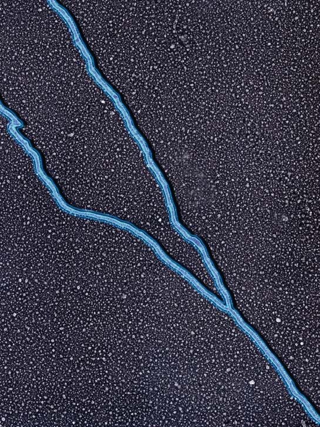
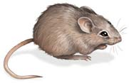
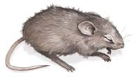
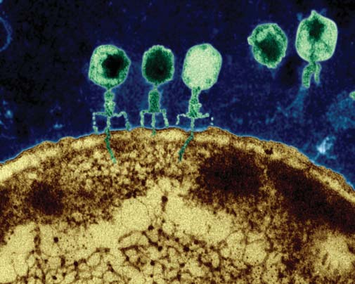
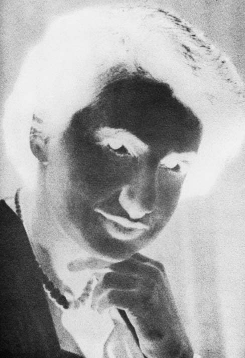
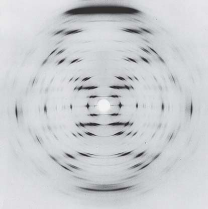
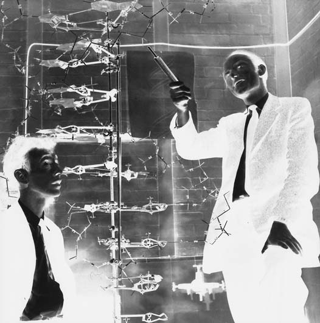
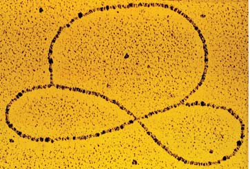
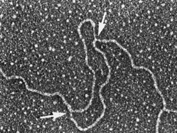
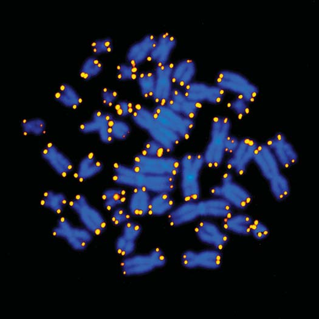

<!DOCTYPE html>
<html xmlns="http://www.w3.org/1999/xhtml" lang="es" xml:lang="es"><head>

<meta charset="utf-8">
<meta name="generator" content="quarto-1.5.53">

<meta name="viewport" content="width=device-width, initial-scale=1.0, user-scalable=yes">

<meta name="author" content="Marcelo Amores">

<title>12 ADN: Molécula portadora de la información genética – BIOLOGÍA SOLOMON</title>
<style>
code{white-space: pre-wrap;}
span.smallcaps{font-variant: small-caps;}
div.columns{display: flex; gap: min(4vw, 1.5em);}
div.column{flex: auto; overflow-x: auto;}
div.hanging-indent{margin-left: 1.5em; text-indent: -1.5em;}
ul.task-list{list-style: none;}
ul.task-list li input[type="checkbox"] {
  width: 0.8em;
  margin: 0 0.8em 0.2em -1em; /* quarto-specific, see https://github.com/quarto-dev/quarto-cli/issues/4556 */ 
  vertical-align: middle;
}
</style>


<script src="site_libs/quarto-nav/quarto-nav.js"></script>
<script src="site_libs/quarto-nav/headroom.min.js"></script>
<script src="site_libs/clipboard/clipboard.min.js"></script>
<script src="site_libs/quarto-search/autocomplete.umd.js"></script>
<script src="site_libs/quarto-search/fuse.min.js"></script>
<script src="site_libs/quarto-search/quarto-search.js"></script>
<meta name="quarto:offset" content="./">
<link href="./13-expresion-genica.html" rel="next">
<link href="./11-herencia.html" rel="prev">
<link href="./images/Icono_E.png" rel="icon" type="image/png">
<script src="site_libs/quarto-html/quarto.js"></script>
<script src="site_libs/quarto-html/popper.min.js"></script>
<script src="site_libs/quarto-html/tippy.umd.min.js"></script>
<script src="site_libs/quarto-html/anchor.min.js"></script>
<link href="site_libs/quarto-html/tippy.css" rel="stylesheet">
<link href="site_libs/quarto-html/quarto-syntax-highlighting.css" rel="stylesheet" class="quarto-color-scheme" id="quarto-text-highlighting-styles">
<link href="site_libs/quarto-html/quarto-syntax-highlighting-dark.css" rel="prefetch" class="quarto-color-scheme quarto-color-alternate" id="quarto-text-highlighting-styles">
<script src="site_libs/bootstrap/bootstrap.min.js"></script>
<link href="site_libs/bootstrap/bootstrap-icons.css" rel="stylesheet">
<link href="site_libs/bootstrap/bootstrap.min.css" rel="stylesheet" class="quarto-color-scheme" id="quarto-bootstrap" data-mode="light">
<link href="site_libs/bootstrap/bootstrap-dark.min.css" rel="prefetch" class="quarto-color-scheme quarto-color-alternate" id="quarto-bootstrap" data-mode="dark">
<script id="quarto-search-options" type="application/json">{
  "location": "navbar",
  "copy-button": false,
  "collapse-after": 3,
  "panel-placement": "end",
  "type": "overlay",
  "limit": 50,
  "keyboard-shortcut": [
    "f",
    "/",
    "s"
  ],
  "show-item-context": false,
  "language": {
    "search-no-results-text": "Sin resultados",
    "search-matching-documents-text": "documentos encontrados",
    "search-copy-link-title": "Copiar el enlace en la búsqueda",
    "search-hide-matches-text": "Ocultar resultados adicionales",
    "search-more-match-text": "resultado adicional en este documento",
    "search-more-matches-text": "resultados adicionales en este documento",
    "search-clear-button-title": "Borrar",
    "search-text-placeholder": "",
    "search-detached-cancel-button-title": "Cancelar",
    "search-submit-button-title": "Enviar",
    "search-label": "Buscar"
  }
}</script>
<!-- Verificación de Google -->

<meta name="google-site-verification" content="EYveEP5I9oi6m-r8Qa_Fett47y3RJFqSizYYvf7G1RM">


<!-- Canonical URL dinámico -->

<link rel="canonical" link:"{{="" page.url="" |="" absolute_url="" }}"="">


  <script src="https://cdnjs.cloudflare.com/polyfill/v3/polyfill.min.js?features=es6"></script>
  <script src="https://cdn.jsdelivr.net/npm/mathjax@3/es5/tex-chtml-full.js" type="text/javascript"></script>

<script type="text/javascript">
const typesetMath = (el) => {
  if (window.MathJax) {
    // MathJax Typeset
    window.MathJax.typeset([el]);
  } else if (window.katex) {
    // KaTeX Render
    var mathElements = el.getElementsByClassName("math");
    var macros = [];
    for (var i = 0; i < mathElements.length; i++) {
      var texText = mathElements[i].firstChild;
      if (mathElements[i].tagName == "SPAN") {
        window.katex.render(texText.data, mathElements[i], {
          displayMode: mathElements[i].classList.contains('display'),
          throwOnError: false,
          macros: macros,
          fleqn: false
        });
      }
    }
  }
}
window.Quarto = {
  typesetMath
};
</script>

</head>

<body class="nav-sidebar floating nav-fixed">

<div id="quarto-search-results"></div>
  <header id="quarto-header" class="headroom fixed-top">
    <nav class="navbar navbar-expand-lg " data-bs-theme="dark">
      <div class="navbar-container container-fluid">
      <div class="navbar-brand-container mx-auto">
    <a href="./index.html" class="navbar-brand navbar-brand-logo">
    
    </a>
  </div>
            <div id="quarto-search" class="" title="Buscar"></div>
          <button class="navbar-toggler" type="button" data-bs-toggle="collapse" data-bs-target="#navbarCollapse" aria-controls="navbarCollapse" role="menu" aria-expanded="false" aria-label="Navegación de palanca" onclick="if (window.quartoToggleHeadroom) { window.quartoToggleHeadroom(); }">
  <span class="navbar-toggler-icon"></span>
</button>
          <div class="collapse navbar-collapse" id="navbarCollapse">
            <ul class="navbar-nav navbar-nav-scroll me-auto">
  <li class="nav-item">
    <a class="nav-link active" href="./index.html" aria-current="page"> 
<span class="menu-text">Inicio</span></a>
  </li>  
  <li class="nav-item">
    <a class="nav-link" href="https://envinatu.github.io/biologia/"> 
<span class="menu-text">Biología</span></a>
  </li>  
  <li class="nav-item">
    <a class="nav-link" href="https://envinatu.github.io/quimica/"> 
<span class="menu-text">Química</span></a>
  </li>  
  <li class="nav-item">
    <a class="nav-link" href="https://envinatu.github.io/geociencias"> 
<span class="menu-text">Geociencias</span></a>
  </li>  
  <li class="nav-item">
    <a class="nav-link" href="https://envinatu.github.io/pedagogia"> 
<span class="menu-text">Educación</span></a>
  </li>  
  <li class="nav-item">
    <a class="nav-link" href="https://envinatu.github.io/rubick"> 
<span class="menu-text">Ludociencia</span></a>
  </li>  
  <li class="nav-item">
    <a class="nav-link" href="https://envinatu.github.io/blog"> 
<span class="menu-text">Blog</span></a>
  </li>  
  <li class="nav-item">
    <a class="nav-link" href="https://envinatu.github.io/amores"> 
<span class="menu-text">Sobre Mi</span></a>
  </li>  
</ul>
            <ul class="navbar-nav navbar-nav-scroll ms-auto">
  <li class="nav-item compact">
    <a class="nav-link" href="https://github.com/envinatu/bio27/blob/main/docs/BIOLOGÍA-2025-2026-2027.pdf"> <i class="bi bi-filetype-pdf" role="img" aria-label="Ver PDF">
</i> 
<span class="menu-text"></span></a>
  </li>  
  <li class="nav-item compact">
    <a class="nav-link" href="https://github.com/envinatu/bio27/blob/main/docs/BIOLOGÍA-2025-2026-2027.epub"> <i class="bi bi-journal-bookmark-fill" role="img" aria-label="Ver eBook">
</i> 
<span class="menu-text"></span></a>
  </li>  
  <li class="nav-item compact">
    <a class="nav-link" href="https://www.linkedin.com/in/marceloamores/"> <i class="bi bi-linkedin" role="img" aria-label="Marcelo Amores LinkedIn">
</i> 
<span class="menu-text"></span></a>
  </li>  
  <li class="nav-item compact">
    <a class="nav-link" href="https://github.com/envinatu"> <i class="bi bi-github" role="img" aria-label="Envinatu GitHub">
</i> 
<span class="menu-text"></span></a>
  </li>  
</ul>
          </div> <!-- /navcollapse -->
            <div class="quarto-navbar-tools">
  <a href="" class="quarto-color-scheme-toggle quarto-navigation-tool  px-1" onclick="window.quartoToggleColorScheme(); return false;" title="Alternar modo oscuro"><i class="bi"></i></a>
  <a href="" class="quarto-reader-toggle quarto-navigation-tool px-1" onclick="window.quartoToggleReader(); return false;" title="Alternar modo lector">
  <div class="quarto-reader-toggle-btn">
  <i class="bi"></i>
  </div>
</a>
</div>
      </div> <!-- /container-fluid -->
    </nav>
  <nav class="quarto-secondary-nav">
    <div class="container-fluid d-flex">
      <button type="button" class="quarto-btn-toggle btn" data-bs-toggle="collapse" role="button" data-bs-target=".quarto-sidebar-collapse-item" aria-controls="quarto-sidebar" aria-expanded="false" aria-label="Alternar barra lateral" onclick="if (window.quartoToggleHeadroom) { window.quartoToggleHeadroom(); }">
        <i class="bi bi-layout-text-sidebar-reverse"></i>
      </button>
        <nav class="quarto-page-breadcrumbs" aria-label="breadcrumb"><ol class="breadcrumb"><li class="breadcrumb-item"><a href="./12-adn.html"><span class="chapter-title">12 ADN: Molécula portadora de la información genética</span></a></li></ol></nav>
        <a class="flex-grow-1" role="navigation" data-bs-toggle="collapse" data-bs-target=".quarto-sidebar-collapse-item" aria-controls="quarto-sidebar" aria-expanded="false" aria-label="Alternar barra lateral" onclick="if (window.quartoToggleHeadroom) { window.quartoToggleHeadroom(); }">      
        </a>
    </div>
  </nav>
</header>
<!-- content -->
<div id="quarto-content" class="quarto-container page-columns page-rows-contents page-layout-article page-navbar">
<!-- sidebar -->
  <nav id="quarto-sidebar" class="sidebar collapse collapse-horizontal quarto-sidebar-collapse-item sidebar-navigation floating overflow-auto">
    <div class="sidebar-menu-container"> 
    <ul class="list-unstyled mt-1">
        <li class="sidebar-item">
  <div class="sidebar-item-container"> 
  <a href="./index.html" class="sidebar-item-text sidebar-link">
 <span class="menu-text">Presentación</span></a>
  </div>
</li>
        <li class="sidebar-item">
  <div class="sidebar-item-container"> 
  <a href="./000-prefacio.html" class="sidebar-item-text sidebar-link">
 <span class="menu-text">Prefacio</span></a>
  </div>
</li>
        <li class="sidebar-item">
  <div class="sidebar-item-container"> 
  <a href="./001-al-estudiante.html" class="sidebar-item-text sidebar-link">
 <span class="menu-text">Al estudiante</span></a>
  </div>
</li>
        <li class="sidebar-item">
  <div class="sidebar-item-container"> 
  <a href="./01-una-vision-de-la-vida.html" class="sidebar-item-text sidebar-link"><span class="chapter-title">1 Una visión de la vida</span></a>
  </div>
</li>
        <li class="sidebar-item">
  <div class="sidebar-item-container"> 
  <a href="./02-atomos-y-moleculas.html" class="sidebar-item-text sidebar-link"><span class="chapter-title">2 Átomos y moléculas: la base química de la vida</span></a>
  </div>
</li>
        <li class="sidebar-item">
  <div class="sidebar-item-container"> 
  <a href="./03-quimica-de-la-vida.html" class="sidebar-item-text sidebar-link"><span class="chapter-title">3 La química de la vida: Compuestos orgánicos</span></a>
  </div>
</li>
        <li class="sidebar-item">
  <div class="sidebar-item-container"> 
  <a href="./04-organizacion-de-la-celula.html" class="sidebar-item-text sidebar-link"><span class="chapter-title">4 Organización de la célula</span></a>
  </div>
</li>
        <li class="sidebar-item">
  <div class="sidebar-item-container"> 
  <a href="./05-membranas-biologicas.html" class="sidebar-item-text sidebar-link"><span class="chapter-title">5 Membranas biológicas</span></a>
  </div>
</li>
        <li class="sidebar-item">
  <div class="sidebar-item-container"> 
  <a href="./06-comunicacion-celular.html" class="sidebar-item-text sidebar-link"><span class="chapter-title">6 Comunicación celular</span></a>
  </div>
</li>
        <li class="sidebar-item">
  <div class="sidebar-item-container"> 
  <a href="./07-energia-y-metabolismo.html" class="sidebar-item-text sidebar-link"><span class="chapter-title">7 Energía y metabolismo</span></a>
  </div>
</li>
        <li class="sidebar-item">
  <div class="sidebar-item-container"> 
  <a href="./08-produccion-de-atp.html" class="sidebar-item-text sidebar-link"><span class="chapter-title">8 ¿Cómo producen ATP las células? Rutas de liberación de energía</span></a>
  </div>
</li>
        <li class="sidebar-item">
  <div class="sidebar-item-container"> 
  <a href="./09-fotosintesis.html" class="sidebar-item-text sidebar-link"><span class="chapter-title">9 Fotosíntesis: captura de energía luminosa</span></a>
  </div>
</li>
        <li class="sidebar-item">
  <div class="sidebar-item-container"> 
  <a href="./10-mitosis-y-meiosis.html" class="sidebar-item-text sidebar-link"><span class="chapter-title">10 Cromosomas, mitosis y meiosis</span></a>
  </div>
</li>
        <li class="sidebar-item">
  <div class="sidebar-item-container"> 
  <a href="./11-herencia.html" class="sidebar-item-text sidebar-link"><span class="chapter-title">11 Los principios básicos de la herencia</span></a>
  </div>
</li>
        <li class="sidebar-item">
  <div class="sidebar-item-container"> 
  <a href="./12-adn.html" class="sidebar-item-text sidebar-link active"><span class="chapter-title">12 ADN: Molécula portadora de la información genética</span></a>
  </div>
</li>
        <li class="sidebar-item">
  <div class="sidebar-item-container"> 
  <a href="./13-expresion-genica.html" class="sidebar-item-text sidebar-link"><span class="chapter-title">13 Expresión génica</span></a>
  </div>
</li>
        <li class="sidebar-item">
  <div class="sidebar-item-container"> 
  <a href="./14-regulacion-genica.html" class="sidebar-item-text sidebar-link"><span class="chapter-title">14 Regulación génica</span></a>
  </div>
</li>
        <li class="sidebar-item">
  <div class="sidebar-item-container"> 
  <a href="./15-tecnologia-adn.html" class="sidebar-item-text sidebar-link"><span class="chapter-title">15 Tecnología ADN y genómica</span></a>
  </div>
</li>
        <li class="sidebar-item">
  <div class="sidebar-item-container"> 
  <a href="./16-genetica-humana.html" class="sidebar-item-text sidebar-link"><span class="chapter-title">16 Genética humana y el genoma humano</span></a>
  </div>
</li>
        <li class="sidebar-item">
  <div class="sidebar-item-container"> 
  <a href="./17-genetica-del-desarrollo.html" class="sidebar-item-text sidebar-link"><span class="chapter-title">17 Genética del desarrollo</span></a>
  </div>
</li>
        <li class="sidebar-item">
  <div class="sidebar-item-container"> 
  <a href="./18-evolucion-darwiniana.html" class="sidebar-item-text sidebar-link"><span class="chapter-title">18 Introducción a la evolución darwiniana</span></a>
  </div>
</li>
        <li class="sidebar-item">
  <div class="sidebar-item-container"> 
  <a href="./19-cambio-en-poblaciones.html" class="sidebar-item-text sidebar-link"><span class="chapter-title">19 Cambio evolutivo en poblaciones</span></a>
  </div>
</li>
        <li class="sidebar-item">
  <div class="sidebar-item-container"> 
  <a href="./20-especiacion.html" class="sidebar-item-text sidebar-link"><span class="chapter-title">20 Especiación y macroevolución</span></a>
  </div>
</li>
        <li class="sidebar-item">
  <div class="sidebar-item-container"> 
  <a href="./21-historia-evolutiva.html" class="sidebar-item-text sidebar-link"><span class="chapter-title">21 El origen e historia evolutiva de la vida</span></a>
  </div>
</li>
        <li class="sidebar-item">
  <div class="sidebar-item-container"> 
  <a href="./22-evolucion-de-primates.html" class="sidebar-item-text sidebar-link"><span class="chapter-title">22 La evolución de los primates</span></a>
  </div>
</li>
        <li class="sidebar-item">
  <div class="sidebar-item-container"> 
  <a href="./23-sistematica.html" class="sidebar-item-text sidebar-link"><span class="chapter-title">23 Comprensión de la diversidad: sistemática</span></a>
  </div>
</li>
        <li class="sidebar-item">
  <div class="sidebar-item-container"> 
  <a href="./24-virus.html" class="sidebar-item-text sidebar-link"><span class="chapter-title">24 Virus y agentes subvirales</span></a>
  </div>
</li>
        <li class="sidebar-item">
  <div class="sidebar-item-container"> 
  <a href="./25-bacterias-y-arqueas.html" class="sidebar-item-text sidebar-link"><span class="chapter-title">25 Bacterias y arqueas</span></a>
  </div>
</li>
        <li class="sidebar-item">
  <div class="sidebar-item-container"> 
  <a href="./26-protistas.html" class="sidebar-item-text sidebar-link"><span class="chapter-title">26 Protistas</span></a>
  </div>
</li>
        <li class="sidebar-item">
  <div class="sidebar-item-container"> 
  <a href="./27-plantas-sin-semillas.html" class="sidebar-item-text sidebar-link"><span class="chapter-title">27 Plantas sin semillas</span></a>
  </div>
</li>
        <li class="sidebar-item">
  <div class="sidebar-item-container"> 
  <a href="./28-plantas-con-semillas.html" class="sidebar-item-text sidebar-link"><span class="chapter-title">E</span></a>
  </div>
</li>
        <li class="sidebar-item">
  <div class="sidebar-item-container"> 
  <a href="./29-hongos.html" class="sidebar-item-text sidebar-link"><span class="chapter-title">29 Los hongos</span></a>
  </div>
</li>
        <li class="sidebar-item">
  <div class="sidebar-item-container"> 
  <a href="./30-diversidad-animal.html" class="sidebar-item-text sidebar-link"><span class="chapter-title">30 Introducción a la diversidad animal</span></a>
  </div>
</li>
        <li class="sidebar-item">
  <div class="sidebar-item-container"> 
  <a href="./31-protostomos.html" class="sidebar-item-text sidebar-link"><span class="chapter-title">31 Esponjas, cnidarios, ctenóforos y protóstomos</span></a>
  </div>
</li>
        <li class="sidebar-item">
  <div class="sidebar-item-container"> 
  <a href="./32-deuterostomos.html" class="sidebar-item-text sidebar-link"><span class="chapter-title">32 Los deuteróstomos</span></a>
  </div>
</li>
        <li class="sidebar-item">
  <div class="sidebar-item-container"> 
  <a href="./33-crecimiento-vegetal.html" class="sidebar-item-text sidebar-link"><span class="chapter-title">33 Estructura, crecimiento y desarrollo vegetal</span></a>
  </div>
</li>
        <li class="sidebar-item">
  <div class="sidebar-item-container"> 
  <a href="./34-hoja.html" class="sidebar-item-text sidebar-link"><span class="chapter-title">L</span></a>
  </div>
</li>
        <li class="sidebar-item">
  <div class="sidebar-item-container"> 
  <a href="./35-tallo.html" class="sidebar-item-text sidebar-link"><span class="chapter-title">35 Estructura y transporte en el tallo</span></a>
  </div>
</li>
        <li class="sidebar-item">
  <div class="sidebar-item-container"> 
  <a href="./36-raices.html" class="sidebar-item-text sidebar-link"><span class="chapter-title">36 Raíces y nutrición mineral</span></a>
  </div>
</li>
        <li class="sidebar-item">
  <div class="sidebar-item-container"> 
  <a href="./37-reproduccion-plantas.html" class="sidebar-item-text sidebar-link"><span class="chapter-title">37 Reproducción en plantas con fl ores</span></a>
  </div>
</li>
        <li class="sidebar-item">
  <div class="sidebar-item-container"> 
  <a href="./38-respuestas-plantas.html" class="sidebar-item-text sidebar-link"><span class="chapter-title">38 Respuestas de desarrollo en plantas a señales externas e internas</span></a>
  </div>
</li>
        <li class="sidebar-item">
  <div class="sidebar-item-container"> 
  <a href="./39-introduccion-fisiologia-animal.html" class="sidebar-item-text sidebar-link"><span class="chapter-title">39 Estructura y función animal. Una introducción</span></a>
  </div>
</li>
        <li class="sidebar-item">
  <div class="sidebar-item-container"> 
  <a href="./40-proteccion-y-movimiento.html" class="sidebar-item-text sidebar-link"><span class="chapter-title">40 Protección, sostén y movimiento</span></a>
  </div>
</li>
        <li class="sidebar-item">
  <div class="sidebar-item-container"> 
  <a href="./41-senalizacion-neuronal.html" class="sidebar-item-text sidebar-link"><span class="chapter-title">41 Señalización neuronal</span></a>
  </div>
</li>
        <li class="sidebar-item">
  <div class="sidebar-item-container"> 
  <a href="./42-regulacion-neuronal.html" class="sidebar-item-text sidebar-link"><span class="chapter-title">42 Regulación neuronal</span></a>
  </div>
</li>
        <li class="sidebar-item">
  <div class="sidebar-item-container"> 
  <a href="./43-sentidos.html" class="sidebar-item-text sidebar-link"><span class="chapter-title">43 Sistemas sensoriales</span></a>
  </div>
</li>
        <li class="sidebar-item">
  <div class="sidebar-item-container"> 
  <a href="./44-transporte-interno.html" class="sidebar-item-text sidebar-link"><span class="chapter-title">44 Transporte interno</span></a>
  </div>
</li>
        <li class="sidebar-item">
  <div class="sidebar-item-container"> 
  <a href="./45-sistema-inmunologico.html" class="sidebar-item-text sidebar-link"><span class="chapter-title">45 El sistema inmunológico: Defensa interna</span></a>
  </div>
</li>
        <li class="sidebar-item">
  <div class="sidebar-item-container"> 
  <a href="./46-intercambio-gases.html" class="sidebar-item-text sidebar-link"><span class="chapter-title">46 Intercambio de gases</span></a>
  </div>
</li>
        <li class="sidebar-item">
  <div class="sidebar-item-container"> 
  <a href="./47-nutricion.html" class="sidebar-item-text sidebar-link"><span class="chapter-title">47 Procesamiento de alimentos y nutrición</span></a>
  </div>
</li>
        <li class="sidebar-item">
  <div class="sidebar-item-container"> 
  <a href="./48-osmorregulacion.html" class="sidebar-item-text sidebar-link"><span class="chapter-title">48 Osmorregulación y desecho de residuos metabólicos</span></a>
  </div>
</li>
        <li class="sidebar-item">
  <div class="sidebar-item-container"> 
  <a href="./49-regulacion-endocrina.html" class="sidebar-item-text sidebar-link"><span class="chapter-title">49 Regulación endocrina</span></a>
  </div>
</li>
        <li class="sidebar-item">
  <div class="sidebar-item-container"> 
  <a href="./50-reproduccion-animal.html" class="sidebar-item-text sidebar-link"><span class="chapter-title">50 Reproducción</span></a>
  </div>
</li>
        <li class="sidebar-item">
  <div class="sidebar-item-container"> 
  <a href="./51-desarrollo-animal.html" class="sidebar-item-text sidebar-link"><span class="chapter-title">51 Desarrollo animal</span></a>
  </div>
</li>
        <li class="sidebar-item">
  <div class="sidebar-item-container"> 
  <a href="./52-comportamiento-animal.html" class="sidebar-item-text sidebar-link"><span class="chapter-title">52 Comportamiento animal</span></a>
  </div>
</li>
        <li class="sidebar-item">
  <div class="sidebar-item-container"> 
  <a href="./53-ecologia-de-poblaciones.html" class="sidebar-item-text sidebar-link"><span class="chapter-title">52.6 SELECCIÓN SEXUAL</span></a>
  </div>
</li>
        <li class="sidebar-item">
  <div class="sidebar-item-container"> 
  <a href="./54-ecologia-de-comunidades.html" class="sidebar-item-text sidebar-link"><span class="chapter-title">54 Ecología de comunidades</span></a>
  </div>
</li>
        <li class="sidebar-item">
  <div class="sidebar-item-container"> 
  <a href="./55-ecosistemas.html" class="sidebar-item-text sidebar-link"><span class="chapter-title">55 Ecosistemas y la biosfera</span></a>
  </div>
</li>
        <li class="sidebar-item">
  <div class="sidebar-item-container"> 
  <a href="./56-geografia-de-la-vida.html" class="sidebar-item-text sidebar-link"><span class="chapter-title">56 Ecología y geografía de la vida</span></a>
  </div>
</li>
        <li class="sidebar-item">
  <div class="sidebar-item-container"> 
  <a href="./57-conservacion.html" class="sidebar-item-text sidebar-link"><span class="chapter-title">57 Diversidad biológica y biología de la conservación</span></a>
  </div>
</li>
    </ul>
    </div>
</nav>
<div id="quarto-sidebar-glass" class="quarto-sidebar-collapse-item" data-bs-toggle="collapse" data-bs-target=".quarto-sidebar-collapse-item"></div>
<!-- margin-sidebar -->
    <div id="quarto-margin-sidebar" class="sidebar margin-sidebar">
        <nav id="TOC" role="doc-toc" class="toc-active">
    <h2 id="toc-title">Tabla de contenidos</h2>
   
  <ul>
  <li><a href="#d" id="toc-d" class="nav-link active" data-scroll-target="#d">D</a>
  <ul class="collapse">
  <li><a href="#evidencias-del-adn-como-el-material-hereditario" id="toc-evidencias-del-adn-como-el-material-hereditario" class="nav-link" data-scroll-target="#evidencias-del-adn-como-el-material-hereditario">12.1 EVIDENCIAS DEL ADN COMO EL MATERIAL HEREDITARIO</a></li>
  <li><a href="#la-estructura-del-adn" id="toc-la-estructura-del-adn" class="nav-link" data-scroll-target="#la-estructura-del-adn">12.2 LA ESTRUCTURA DEL ADN</a></li>
  <li><a href="#los-investigadores-dirigen-un-haz-estrecho-de-rayos-x-hacia-un-solo-cristal-de-adn.-los-rayos-x-se-difractan-curvan-en-ángulos-específi-cos-con-base-en-la-densidad-de-los-electrones-de-átomos-diferentes.-se-pueden-proporcionar-pistas-importantes-sobre-la-estructura-del-adn-mediante-el-análisis-matemático-detallado-de-las-mediciones-de-las-manchas-que-se-forman-cuando-los-rayos-x-inciden-en-la-placa-fotográfi-ca." id="toc-los-investigadores-dirigen-un-haz-estrecho-de-rayos-x-hacia-un-solo-cristal-de-adn.-los-rayos-x-se-difractan-curvan-en-ángulos-específi-cos-con-base-en-la-densidad-de-los-electrones-de-átomos-diferentes.-se-pueden-proporcionar-pistas-importantes-sobre-la-estructura-del-adn-mediante-el-análisis-matemático-detallado-de-las-mediciones-de-las-manchas-que-se-forman-cuando-los-rayos-x-inciden-en-la-placa-fotográfi-ca." class="nav-link" data-scroll-target="#los-investigadores-dirigen-un-haz-estrecho-de-rayos-x-hacia-un-solo-cristal-de-adn.-los-rayos-x-se-difractan-curvan-en-ángulos-específi-cos-con-base-en-la-densidad-de-los-electrones-de-átomos-diferentes.-se-pueden-proporcionar-pistas-importantes-sobre-la-estructura-del-adn-mediante-el-análisis-matemático-detallado-de-las-mediciones-de-las-manchas-que-se-forman-cuando-los-rayos-x-inciden-en-la-placa-fotográfi-ca.">● 1 Los investigadores dirigen un haz estrecho de rayos X hacia un solo cristal de ADN. Los rayos X se difractan (curvan) en ángulos específi cos con base en la densidad de los electrones de átomos diferentes. Se pueden proporcionar pistas importantes sobre la estructura del ADN mediante el análisis matemático detallado de las mediciones de las manchas, que se forman cuando los rayos X inciden en la placa fotográfi ca.</a></li>
  <li><a href="#imagen-de-la-difracción-de-rayos-x-del-adn.-este-patrón-diagonal-del-estiramiento-de-las-manchas-de-11-hasta-5-y-de-1-a-7-como-en-una-carátula-de-reloj-proporciona-evidencia-de-la-estructura-helicoidal-del-adn.-los-patrones-horizontales-alargados-en-la-parte-superior-e-inferior-indican-que-las-bases-de-purina-y-pirimidina-están-apilados-0.34-nm-de-distancia-y-son-perpendiculares-al-eje-de-la-molécula-de-adn" id="toc-imagen-de-la-difracción-de-rayos-x-del-adn.-este-patrón-diagonal-del-estiramiento-de-las-manchas-de-11-hasta-5-y-de-1-a-7-como-en-una-carátula-de-reloj-proporciona-evidencia-de-la-estructura-helicoidal-del-adn.-los-patrones-horizontales-alargados-en-la-parte-superior-e-inferior-indican-que-las-bases-de-purina-y-pirimidina-están-apilados-0.34-nm-de-distancia-y-son-perpendiculares-al-eje-de-la-molécula-de-adn" class="nav-link" data-scroll-target="#imagen-de-la-difracción-de-rayos-x-del-adn.-este-patrón-diagonal-del-estiramiento-de-las-manchas-de-11-hasta-5-y-de-1-a-7-como-en-una-carátula-de-reloj-proporciona-evidencia-de-la-estructura-helicoidal-del-adn.-los-patrones-horizontales-alargados-en-la-parte-superior-e-inferior-indican-que-las-bases-de-purina-y-pirimidina-están-apilados-0.34-nm-de-distancia-y-son-perpendiculares-al-eje-de-la-molécula-de-adn">● 2 Imagen de la difracción de rayos X del ADN. Este patrón diagonal del estiramiento de las manchas de 11 hasta 5 y de 1 a 7 (como en una carátula de reloj) proporciona evidencia de la estructura helicoidal del ADN. Los patrones horizontales alargados en la parte superior e inferior indican que las bases de purina y pirimidina están apilados 0.34 nm de distancia y son perpendiculares al eje de la molécula de ADN</a></li>
  <li><a href="#replicación-del-adn" id="toc-replicación-del-adn" class="nav-link" data-scroll-target="#replicación-del-adn">12.3 REPLICACIÓN DEL ADN</a></li>
  <li><a href="#resumen-enfoque-en-los-objetivos-de-aprendizaje" id="toc-resumen-enfoque-en-los-objetivos-de-aprendizaje" class="nav-link" data-scroll-target="#resumen-enfoque-en-los-objetivos-de-aprendizaje">■ ■ RESUMEN: ENFOQUE EN LOS OBJETIVOS DE APRENDIZAJE</a></li>
  </ul></li>
  </ul>
</nav>
    </div>
<!-- main -->
<main class="content" id="quarto-document-content">

<header id="title-block-header" class="quarto-title-block default">
<div class="quarto-title">
<h1 class="title"><span class="chapter-title">12 ADN: Molécula portadora de la información genética</span></h1>
</div>


<div class="quarto-title-meta">

    
    <div>
    <div class="quarto-title-meta-heading">Fecha de publicación</div>
    <div class="quarto-title-meta-contents">
      <p class="date">septiembre, 2025</p>
    </div>
  </div>
  
    
  </div>
  


</header>


<p>263</p>
<p>CONCEPTOS CLAVE</p>
<p>12.1 Desde inicios de la década de 1920, se comenzó a acumular evidencia de que el ADN es el material hereditario. 12.2 La molécula de ADN consiste en dos cadenas que se enrollan una alrededor de la otra para formar una doble hélice; el orden de sus componentes básicos es la clave para el almacenamiento de la información genética. Los componentes básicos del ADN consisten en cuatro diferentes subunidades de nucleótidos, denominados T, C, A y G. El acoplamiento de las subunidades de nucleótidos se produce con base en reglas precisas de apareamiento: T se empareja con A, y C se empareja con G. 12.3 La replicación del ADN, que resulta en dos moléculas idénticas de ADN de doble cadena, establece el mecanismo molecular para transmitir la información genética de una generación a la siguiente.</p>
<section id="d" class="level1">
<h1>D</h1>
<p>espués del redescubrimiento de los principios de Mendel en 1900, los genetistas realizaron diferentes experimentos para aprender cómo están ordenados los genes en los cromosomas y cómo se transmiten de generación en generación. Sin embargo, las preguntas básicas siguieron sin respuesta durante la mayor parte de la primera mitad del siglo xx: ¿De qué están hechos los genes? ¿Cómo funcionan los genes? Los estudios de los patrones de herencia que se describen en el capítulo 11 no responden a estas preguntas. Sin embargo, proporcionaron una base de conocimiento que permite a los científi cos hacer predicciones acerca de la naturaleza molecular (química) de los genes y cómo funcionan. En general, los científi cos estaban de acuerdo en que los genes debían tener alguna forma de almacenar la información, que la célula puede recuperar y utilizar. Pero, los científi cos también tuvieron que considerar otras propiedades de los genes. Por ejemplo, los experimentos con diversos organismos han demostrado que los genes son generalmente estables y se transmiten sin cambios de generación en generación. Sin embargo, en ocasiones un gen se transforma en una forma diferente; estos cambios genéticos, llamados mutaciones , se transmiten sin cambios a generaciones futuras.</p>
<p>Micrografía electrónica de la replicación del ADN. Durante la replicación, dos moléculas de ADN se sintetizan a partir de la molécula original o molécula parental. Este proceso se observa en la estructura en forma de Y, denominada tenedor de replicación .</p>
<p>Dr.&nbsp;Gopal Murti/Visuals Unlimited</p>
<div class="quarto-figure quarto-figure-center">
<figure class="figure">
<p></p>
<figcaption>12-adn_p297_img1.jpeg</figcaption>
</figure>
</div>
<p>264 Capítulo 12</p>
<p>exploran las características únicas del ADN, incluyendo su estructura y la replicación (vea la fotografía), que le permiten realizar esta función.</p>
<section id="evidencias-del-adn-como-el-material-hereditario" class="level2">
<h2 class="anchored" data-anchor-id="evidencias-del-adn-como-el-material-hereditario">12.1 EVIDENCIAS DEL ADN COMO EL MATERIAL HEREDITARIO</h2>
<p>OBJETIVOS DE APRENDIZAJE</p>
<p>1 Resumir las evidencias acumuladas durante la década de 1940 y principios de 1950 que demuestran que el ADN es el material genético. 2 Establecer las preguntas que abordaron los siguientes experimentos clásicos: experimento de transformación de Griffi th, la contribución de Avery al trabajo de Griffi th y los experimentos de Hershey-Chase.</p>
<p>Durante la década de 1930 y a principios de la de 1940, la mayoría de los genetistas le prestaron poca atención al ADN, convencidos de que el material genético debía ser una proteína. Con base en la evidencia acumulada de que los genes controlan la producción de proteínas (que se analiza en el capítulo 13), ciertamente parecía probable que los genes mismos debían ser proteínas. Los científi cos sabían que las proteínas se componían de más de 20 tipos diferentes de aminoácidos en muchas combinaciones diferentes, lo cual le con fi ere características únicas para cada tipo de proteína. Dada su complejidad y diversidad comparada con otras moléculas, las proteínas parecían ser el “material” del que están hechos los genes. En cambio, los científi cos habían establecido que el ADN y otros ácidos nucleicos estaban hechos de sólo cuatro nucleótidos, y lo que se sabía acerca de su organización los hizo relativamente poco interesantes para la mayoría de los investigadores. Por esta razón, varios de los primeros indicios de las funciones del ADN fueron un tanto inadvertidos.</p>
<p>El ADN es el principio de transformación en las bacterias</p>
<p>Una de estos indicios tuvo su origen en 1928, cuando el médico británico Frederick Griffi th hizo una observación curiosa sobre dos cepas de bacterias de neumococo ( FIGURA 12-1 ). Una cepa lisa (S), llamada así por la formación de colonias lisas sobre un medio de cultivo sólido, que mostró virulencia , esto es la capacidad de causar enfermedad y con frecuencia la muerte, de su huésped. Cuando las células vivas de esta cepa se inyectaron en ratones, los animales contrajeron neumonía y murieron. De</p>
<p>Conforme la ciencia de la genética se fue desarrollando, los bioquímicos hacían un esfuerzo creciente para correlacionar las propiedades conocidas de los genes con la naturaleza de varias moléculas biológicas. ¿Qué tipo de molécula podría almacenar información? ¿Cómo se podría recuperar esta información y utilizarse para dirigir las funciones celulares? ¿Qué tipo de molécula podría ser relativamente estable, pero tener la capacidad de cambiar bajo ciertas condiciones, dando lugar a una mutación? A medida que aprendieron más acerca de la función central de las proteínas en prácticamente todos los aspectos de la estructura celular y del metabolismo, algunos científi cos consideraron a las proteínas como los candidatos principales para conformar el material genético. Sin embargo, las proteínas no resultaron ser las moléculas que controlan la herencia. En este capítulo se analiza cómo descubrieron los investigadores que el ácido desoxirribonucleico (ADN) , un ácido nucleico que no se consideraba especial, es la base molecular de la herencia. Se</p>
<p>EXPERIMENTOS CLAVE</p>
<p>PREGUNTA: ¿Se puede transmitir un rasgo genético de una cepa bacteriana a otra?</p>
<p>HIPÓTESIS: La capacidad de las bacterias de neumococo para causar una enfermedad (neumonía) se puede transmitir de una cepa virulenta (células S o lisas) a una cepa no virulenta (células R o rugosas).</p>
<p>EXPERIMENTO: Griffi th realizó cuatro experimentos en ratones, utilizando las dos cepas de neumococos: (1) inyección de ratones con células vivas rugosas, (2) inyección de ratones con células vivas lisas, (3) inyección de ratones con células lisas y muertas por calor, y (4) inyección de ratones tanto con células vivas rugosas como con células lisas, muertas al ser sometidas al calor.</p>
<p>El ratón muere El ratón vive</p>
<p>Inyección de células R Inyección con células R y células S muertas por calor</p>
<p>Inyección de células S muertas por calor Inyección de células S</p>
<p>El ratón vive El ratón muere</p>
<p>Experimento 3 Experimento 4 Experimento 1 Experimento 2</p>
<p>RESULTADOS Y CONCLUSIÓN: Aunque ni la cepa rugosa ni la cepa lisa muerta mediante el calor podrían causar la muerte de un ratón, una combinación de las dos cepas lo hizo. La autopsia del ratón muerto mostró la presencia de una cepa S de neumococo viva. Estos resultados indicaron que alguna sustancia en las células S muertas debido al calor, había sido capaz de transformar las bacterias R vivas en una forma virulenta.</p>
<p>FIGURA 12-1 Animada Experimentos de transformación de Griffi th Griffi th estaba tratando de desarrollar una vacuna contra la neumonía, cuando por casualidad descubrió el fenómeno de la transformación.</p>
<div class="quarto-figure quarto-figure-center">
<figure class="figure">
<p></p>
<figcaption>12-adn_p298_img1.jpeg</figcaption>
</figure>
</div>
<div class="quarto-figure quarto-figure-center">
<figure class="figure">
<p></p>
<figcaption>12-adn_p298_img2.jpeg</figcaption>
</figure>
</div>
<div class="quarto-figure quarto-figure-center">
<figure class="figure">
<p></p>
<figcaption>12-adn_p298_img3.jpeg</figcaption>
</figure>
</div>
<p>ADN: Molécula portadora de la información genética 265</p>
<p>Como se muestra en la FIGURA 12-3 , ellos marcaron la proteína viral de una muestra de fagos con 35 S, un isótopo radiactivo del azufre, y el ADN viral de una segunda muestra con 32 P, un isótopo radiactivo del fósforo. Recuerde del capítulo 3 que las proteínas contienen azufre como parte de los aminoácidos cisteína y metionina y que los ácidos nucleicos contienen grupos fosfato. Los fagos en cada muestra estabán adheridos a las bacterias, y los investigadores los separaron agitando la muestra en una licuadora. Luego centrifugaron las muestras. En la muestra en la que se habían marcado las proteínas con 35 S, se encontró posteriormente radiactividad en el sobrenadante, hecho que indicó que la proteína no entró en las células. En la muestra en la que se había marcado el ADN con 32 P, encontraron radiactividad asociada a las células bacterianas (en el sedimento): el ADN de hecho entró a las células. Hershey y Chase concluyeron que los fagos inyectan su ADN en células bacterianas, dejando la mayoría de sus proteínas en el exterior. Este descubrimiento destacó la importancia del ADN en la reproducción viral, y muchos científi cos lo vieron como una demostración importante de la función del ADN como material hereditario.</p>
<p>Repaso</p>
<p>■ ¿Cómo muestran los experimentos de Avery y sus colegas al ADN como el material genético esencial?</p>
<p>■ ¿Cómo establecen los experimentos de Hershey y Chase que el ADN es el material genético en los bacteriófagos?</p>
</section>
<section id="la-estructura-del-adn" class="level2">
<h2 class="anchored" data-anchor-id="la-estructura-del-adn">12.2 LA ESTRUCTURA DEL ADN</h2>
<p>OBJETIVOS DE APRENDIZAJE</p>
<p>3 Explicar cómo se unen las subunidades de nucleótidos para formar una cadena simple de ADN. 4 Describir cómo están orientadas las dos cadenas de ADN, una con respecto de la otra. 5 Establecer las reglas de apareamiento de las bases nucleótidas del ADN y describir cómo las bases complementarias se unen entre sí.</p>
<p>manera que no fue una sorpresa que los animales inyectados con células previamente muertas por acción del calor, sobrevivieran. Una cepa relacionada de bacterias rugosas (R), denominada así debido a que forman colonias con una superfi cie rugosa, mostró avirulencia , o incapacidad de producir efectos patógenos; los ratones inyectados con las células de esta cepa, vivas o muertas por calor, sobrevivieron. Sin embargo, cuando Griffi th inyectó ratones con una mezcla de células S virulentas muertas por calor y con células R vivas avirulentas, una alta proporción de ratones murieron. Entonces Griffi th aisló las células S vivas de los ratones muertos. Debido a que ni la cepa S muerta por calor ni la cepa R viva se podrían convertir a la forma virulenta viva cuando se inyectan por sí solas en el experimento control, parecía que algo en las células muertas por calor convertía a las células no virulentas a la forma letal. Este tipo de cambio genético permanente en el cual las propiedades de una cepa de células muertas son atribuidas a una cepa diferente de células vivas se llama transformación . Los científi cos sugirieron la hipótesis de que alguna sustancia química (un principio o factor de transformación) era transferida de las bacterias muertas a las células vivas y provocaba la transformación. En 1944, Oswald T. Avery y sus colegas Colin M. MacLeod y Maclyn McCarty identifi caron químicamente el factor de transformación de Griffi th como el ADN. Lo hicieron a través de una serie de experimentos cuidadosos en los que causaron lisis (rompimiento), de las células S y separaron los contenidos celulares en varias fracciones: lípidos, proteínas, polisacáridos y ácidos nucleicos (ADN y ARN). Probaron cada fracción para ver si se podrían transformar las células R vivas en células S. Los experimentos con lípidos, polisacáridos y proteínas no causaron transformación. Sin embargo, cuando Avery trató las células R vivas con los ácidos nucleicos extraídos de las células S, las células R se transformaron en células S. Aunque los científi cos actualmente consideran que estos resultados son la primera demostración defi nitiva de que el ADN es el material genético, no todos los científi cos de la época estaban convencidos. Muchos pensaron que los resultados se podrían aplicar sólo a las bacterias y no podrían tener ninguna relevancia para la genética de los eucariotas. Durante los siguientes años, se agregaron nuevas evidencias con los núcleos haploides de granos de polen y los gametos como el espermatozoide, que contienen sólo la mitad de la cantidad de ADN que se encuentra en las células somáticas diploides de la misma especie. (Las células somáticas son células del cuerpo y nunca se convierten en gametos). Puesto que los científi cos aceptaban de manera general, que los genes se encuentran en los cromosomas, estos descubrimientos que correlacionan el contenido de ADN con el número de cromosomas proporcionaron una fuerte evidencia circunstancial de la importancia del ADN en la herencia eucariota.</p>
<p>El ADN es el material genético en ciertos virus</p>
<p>En 1952, los genetistas Alfred Hershey y Martha Chase realizaron una serie de refi nados experimentos sobre la reproducción de virus que infectan las bacterias, conocidos como bacteriófagos o fagos (se estudian en el capítulo 24). Cuando planearon sus experimentos, ellos sabían que los fagos se reproducen en el interior de una célula bacteriana, causando fi nalmente que la célula se rompa y libere una gran cantidad de nuevos virus. Ya que los estudios de microscopia electrónica han demostrado que sólo una parte del fago infeccioso entra a la célula, razonaron que el material genético debía estar incluido en esa porción ( FIGURA 12-2 ).</p>
<p>0.5 μ m</p>
<p>Bacteriófago</p>
<p>Material genético del fago</p>
<p>Célula bacteriana ( E. coli )</p>
<p>© Eye of Science/Photo Researchers, Inc.</p>
<p>FIGURA 12-2 Bacteriófagos en una célula bacteriana Esta MET coloreada muestra varios fagos adheridos a la bacteria Escherichia coli . Observe que el material genético viral se inyecta en la bacteria.</p>
<div class="quarto-figure quarto-figure-center">
<figure class="figure">
<p></p>
<figcaption>12-adn_p299_img1.jpeg</figcaption>
</figure>
</div>
<p>266 Capítulo 12</p>
<p>derna ( TABLA 12-1 ). Como se verá en el análisis siguiente, los científi cos ya sabían mucho acerca de las propiedades físicas y químicas del ADN, cuando Watson y Crick se interesaron en el problema, de hecho, no realizaron ningún experimento o recopilaron nuevos datos. Su contribución muy importante fue la de integrar toda la información disponible en un modelo que demostró cómo la molécula de ADN puede portar tanto</p>
<p>Los científi cos en general, no aceptaron el ADN como el material genético hasta 1953, cuando el científi co estadounidense James Watson y el científi co británico Francis Crick, trabajando ambos en Inglaterra, propusieron un modelo para su estructura que tenía un poder explicativo extraordinario. La historia de cómo se descubrió la estructura del ADN es uno de los capítulos más notables de la historia de la biología mo-</p>
<p>EXPERIMENTO CLAVE</p>
<p>PREGUNTA: ¿Cuál es el material genético en los virus bacterianos (fagos), el ADN o las proteínas?</p>
<p>HIPÓTESIS: El ADN es el material genético de los virus bacterianos.</p>
<p>EXPERIMENTO: Hershey y Chase generaron poblaciones de fagos, ya sea con ADN o cubierta proteica marcados radiactivamente. En ambos casos, los investigadores infectaron las bacterias con los fagos y después determinaron si era el ADN o la proteína inyectados en las células bacterianas, quien dirigía la formación de nuevas partículas virales.</p>
<p>El sobrenadante está conformado por la proteína marcada con 35 S</p>
<p>Las bacterias sedimentadas en forma de gránulos no contienen el isótopo 35 S</p>
<p>32 P</p>
<p>35 S</p>
<p>35 S</p>
<p>Los fagos marcados radiactivamente infectaron las células bacterianas.</p>
<p>Experimento A , la cubierta proteica de los fagos se marcó con el isótopo 35 S (verde)</p>
<p>Experimento B , el ADN de los fagos se marcó con el isótopo 32 P (rojo)</p>
<p>Ninguna proteína marcada radiactivamente ingresó en la célula.</p>
<p>El sedimento granulado contiene nuevos fagos provenientes de las bacterias infectadas</p>
<p>Los fagos de los gránulos inyectaron material genético</p>
<p>Algunos virus recientemente ensamblados tiene ADN marcado radiactivamente.</p>
<p>32 P</p>
<p>1 Las células se agitaron en la licuadora y se centrifugaron. Las bacterias (que son más pesadas), se sedimentan en forma de gránulos. Los fagos y partes del fago, que son más ligeros, permanecen en el sobrenadante.</p>
<p>2 Se probó la radiactividad de los gránulos y el sobrenadante.</p>
<p>3</p>
<p>Las bacterias en los gránulos contienen ADN marcado con el isótopo 32 P.</p>
<p>RESULTADOS Y CONCLUSIÓN: Los investigadores pudieron separar las cubiertas proteicas de los fagos marcadas con el isótopo radiactivo 35 S, de las células bacterianas infectadas sin afectar la reproducción viral. Sin embargo, no pudieron separar el ADN viral marcado con el isótopo radiactivo 32 P de las células bacterianas infectadas. Esto demostró que el ADN viral entra en las células bacterianas y se requiere para la síntesis de nuevas partículas virales. Por lo tanto, el ADN es el material genético de los fagos.</p>
<p>FIGURA 12-3 Animada Los experimentos de Hershey y Chase</p>
<p>ADN: Molécula portadora de la información genética 267</p>
<p>En 1949, Erwin Chargaff y sus colegas de la Universidad de Columbia habían determinado la composición de las bases del ADN de varios organismos y tejidos. Encontraron una relación simple entre las bases que resultó ser una pista importante para la estructura del ADN. Independientemente de la fuente del ADN, en palabras de Chargaff las “proporciones de purinas a pirimidinas y también de adenina a timina y de guanina a citosina son cercanas a 1” ( TABLA 12-2 ). En otras</p>
<p>la información para fabricar proteínas y servir como su propio molde (patrón o guía) para su duplicación.</p>
<p>Los nucleótidos pueden unirse covalentemente en cualquier orden para formar polímeros largos</p>
<p>Como se analizó en el capítulo 3, cada bloque básico del ADN es un nucleótido que consiste en la azúcar pentosa desoxirribosa , un fosfato, y una de las cuatro bases nitrogenadas ( FIGURA 12-4 ). Es convencional numerar los átomos en una molécula usando un sistema ideado por los químicos orgánicos. Por consiguiente, en la química del ácido nucleico los carbonos individuales en cada azúcar y en cada base están numerados. Los carbonos en una base se designan con números, pero los carbonos en un azúcar se distinguen de los de la base por medio de símbolos primos, como 2 ¿ . La base nitrogenada está unida al carbono 1 ¿ del azúcar, y el fosfato está unido al carbono 5 ¿ . Las bases incluyen dos purinas , adenina (A) y guanina (G) , y dos pirimidinas , timina (T) y citosina (C) . Los nucleótidos están unidos por enlaces covalentes para formar una estructura que alterna azúcar fosfato. El carbono 3 ¿ de un azúcar está unido al 5 ¿ fosfato del azúcar adyacente para formar un enlace 3 ¿ , 5 ¿ fosfodiéster . El resultado es un polímero de longitud indefi nida, con los nucleótidos enlazados en cualquier orden. Los científi cos saben ahora que la mayoría de las moléculas de ADN encontradas en las células son largas cadenas conformadas por millones de bases . La fi gura 12-4 muestra también que una cadena de polinucleótidos presenta una dirección. No importa que tan larga pueda ser la cadena, un extremo, el extremo 5 ¿ , tiene un carbono 5 ¿ unido a un fosfato y el otro, el extremo 3 ¿ , tiene un carbono 3 ¿ unido a un grupo hidroxilo.</p>
<p>Línea del tiempo de descubrimientos históricos del ADN seleccionados</p>
<p>Fecha Descubrimiento</p>
<p>1871 Friedrich Miescher informó el descubrimiento de una nueva sustancia, la nucleína , proveniente del núcleo celular. Ahora se sabe que la nucleína es una mezcla de ADN, ARN y proteínas.</p>
<p>1928 Frederick Griffi th descubrió una sustancia en las bacterias muertas por calor que “transforma” a las bacterias vivas.</p>
<p>1944 Oswald Avery, Colin MacLeod y Maclyn McCarty identifi caron químicamente el principio de transformación de Griffi th, como ADN.</p>
<p>1949 Erwin Chargaff reportó algunas relaciones entre las bases del ADN que proporcionan una clave sobre su estructura.</p>
<p>1952 Alfred Hershey y Martha Chase demostraron que el ADN y no las proteínas, participan en la reproducción viral.</p>
<p>1952 Rosalind Franklin produjo las imágenes de la difracción de rayos X del ADN.</p>
<p>1953 James Watson y Francis Crick propusieron un modelo de la estructura del ADN; esta contribución se considera el inicio de una revolución en la biología molecular que continúa hasta el presente.</p>
<p>1958 Matthew Meselson y Franklin Stahl demostraron que la replicación del ADN es semiconservativa.</p>
<p>1962 James Watson, Francis Crick y Maurice Wilkins fueron galardonados con el Premio Nobel de Medicina por sus descubrimientos sobre la estructura molecular de los ácidos nucleicos.*</p>
<p>1969 Alfred Hershey fue galardonado con el Premio Nobel de Medicina por el descubrimiento del mecanismo de replicación y la estructura genética de los virus.</p>
<p>*Rosalind Franklin no pudo compartir el premio porque había fallecido, victima de un cáncer ovárico.</p>
<p>TABLA 12-1</p>
<p>Timina</p>
<p>5</p>
<p>Desoxirribosa (azúcar)</p>
<p>3</p>
<p>Citosina</p>
<p>Guanina</p>
<p>Nucleótido</p>
<p>Grupo fosfato</p>
<p>Enlace fosfodiéster</p>
<p>′</p>
<p>O</p>
<p>P</p>
<p>O –</p>
<p>O CH 2 O O</p>
<p>H H H</p>
<p>H H</p>
<p>O</p>
<p>P</p>
<p>O –</p>
<p>O CH 2 O O</p>
<p>H H H</p>
<p>H</p>
<p>3 ′ OH</p>
<p>O H N</p>
<p>N</p>
<p>N</p>
<p>N N</p>
<p>N H</p>
<p>H</p>
<p>H</p>
<p>O</p>
<p>H</p>
<p>O</p>
<p>H</p>
<p>O</p>
<p>N</p>
<p>H N</p>
<p>H 3 C ′</p>
<p>O</p>
<p>P</p>
<p>O –</p>
<p>O CH 2 O 5 ′</p>
<p>H H H</p>
<p>H 1 ′</p>
<p>2 ′ 3 ′</p>
<p>4 ′</p>
<p>O</p>
<p>P</p>
<p>O –</p>
<p>O CH 2 O O</p>
<p>H H H</p>
<p>H H</p>
<p>N</p>
<p>H</p>
<p>N</p>
<p>N N</p>
<p>N</p>
<p>Adenina</p>
<p>H H</p>
<p>H</p>
<p>N H</p>
<p>N H H</p>
<p>O H</p>
<p>FIGURA 12-4 Las subunidades de nucleótidos del ADN Una sola cadena de ADN se compone de una estructura ( superpuesta en el fondo azul ) de grupos fosfato que se alternan con el azúcar desoxirribosa ( verde ). Los enlaces fosfodiéster ( rosa ) unen a los azúcares de los nucleótidos adyacentes. Al carbono 1 ¿ de cada azúcar, se encuentra unida una de las cuatro bases nitrogenadas ( de arriba a abajo ): timina, adenina, citosina y guanina. ( El nucleótido que contiene la base de adenina se resalta de amarillo ). Observe la polaridad de la cadena de polinucleótido, con el extremo 5 ¿ en la parte superior de la fi gura y el extremo 3 ¿ en la parte inferior.</p>
<p>Composición de bases en el ADN de organismos seleccionados</p>
<p>Porcentaje de bases de ADN Proporciones</p>
<p>Fuente de ADN A T G C A/T G/C</p>
<p>E. coli 26.1 23.9 24.9 25.1 1.09 0.99</p>
<p>Levadura 31.3 32.9 18.7 17.1 0.95 1.09</p>
<p>Esperma de erizo de mar 32.5 31.8 17.5 18.2 1.02 0.96</p>
<p>Esperma de arenque 27.8 27.5 22.2 22.6 1.01 0.98</p>
<p>Hígado humano 30.3 30.3 19.5 19.9 1.00 0.98</p>
<p>Maíz ( Zea mays ) 25.6 25.3 24.5 24.6 1.01 1.00</p>
<p>TABLA 12-2</p>
<p>268 Capítulo 12</p>
<p>palabras, en moléculas de ADN de doble cadena, el número de purinas es igual al número de pirimidinas, el número de adeninas es igual al número de timinas (A es igual a T), y el número de guaninas es igual al número de citosinas (G es igual a C). Estas igualdades se llaman reglas de Chargaff .</p>
<p>El ADN está formado por dos cadenas de polinucleótidos entrelazadas para formar una doble hélice</p>
<p>La información clave sobre la estructura del ADN provino de estudios de difracción con rayos X sobre cristales de ADN purifi cados, realizados por la científi ca británica Rosalind Franklin del King College de 1951 a 1953 ( FIGURA 12-5 ). La difracción de rayos X , un método efi caz para determinar la estructura 3-D de una molécula, puede determinar las distancias entre los átomos de las moléculas dispuestas en una estructura cristalina que se repite regularmente ( FIGURA 12-6 ). Los rayos X tienen longitudes de onda cortas tales que se pueden dispersar por los electrones que rodean los átomos en una molécula. Los átomos con densas nubes de electrones (como el fósforo y el oxígeno), tienden a desviar los electrones con más fuerza que los átomos con los números atómicos más bajos. Exponer un cristal a un intenso haz de rayos X provoca que la disposición regular de sus átomos difracte o disperse a los rayos X de una manera específi ca. El patrón de difracción de los rayos X se registra en la película fotográfi ca</p>
<p>FIGURA 12-5 Rosalind Franklin Franklin fue una científi ca talentosa cuya contribución ayudó a esclarecer la estructura de doble hélice del ADN.</p>
<p>© Science Source/Photo Researchers, Inc.</p>
<p>MÉTODO DE INVESTIGACIÓN</p>
<p>La difracción con rayos X se puede utilizar para determinar la disposición regular de los átomos en una muestra cristalina, por ejemplo, del ADN. Debido a que cada tipo de cristal tiene su propio patrón característico, la estructura tridimensional de la molécula en estudio se puede deducir.</p>
</section>
<section id="los-investigadores-dirigen-un-haz-estrecho-de-rayos-x-hacia-un-solo-cristal-de-adn.-los-rayos-x-se-difractan-curvan-en-ángulos-específi-cos-con-base-en-la-densidad-de-los-electrones-de-átomos-diferentes.-se-pueden-proporcionar-pistas-importantes-sobre-la-estructura-del-adn-mediante-el-análisis-matemático-detallado-de-las-mediciones-de-las-manchas-que-se-forman-cuando-los-rayos-x-inciden-en-la-placa-fotográfi-ca." class="level2">
<h2 class="anchored" data-anchor-id="los-investigadores-dirigen-un-haz-estrecho-de-rayos-x-hacia-un-solo-cristal-de-adn.-los-rayos-x-se-difractan-curvan-en-ángulos-específi-cos-con-base-en-la-densidad-de-los-electrones-de-átomos-diferentes.-se-pueden-proporcionar-pistas-importantes-sobre-la-estructura-del-adn-mediante-el-análisis-matemático-detallado-de-las-mediciones-de-las-manchas-que-se-forman-cuando-los-rayos-x-inciden-en-la-placa-fotográfi-ca.">● 1 Los investigadores dirigen un haz estrecho de rayos X hacia un solo cristal de ADN. Los rayos X se difractan (curvan) en ángulos específi cos con base en la densidad de los electrones de átomos diferentes. Se pueden proporcionar pistas importantes sobre la estructura del ADN mediante el análisis matemático detallado de las mediciones de las manchas, que se forman cuando los rayos X inciden en la placa fotográfi ca.</h2>
<p>La placa fotográfica muestra la disposición o arreglo de los átomos del ADN.</p>
<p>Fuente de rayos X Muestra de ADN Rayos X difractados por el ADN</p>
<p>Haz de rayos X</p>
</section>
<section id="imagen-de-la-difracción-de-rayos-x-del-adn.-este-patrón-diagonal-del-estiramiento-de-las-manchas-de-11-hasta-5-y-de-1-a-7-como-en-una-carátula-de-reloj-proporciona-evidencia-de-la-estructura-helicoidal-del-adn.-los-patrones-horizontales-alargados-en-la-parte-superior-e-inferior-indican-que-las-bases-de-purina-y-pirimidina-están-apilados-0.34-nm-de-distancia-y-son-perpendiculares-al-eje-de-la-molécula-de-adn" class="level2">
<h2 class="anchored" data-anchor-id="imagen-de-la-difracción-de-rayos-x-del-adn.-este-patrón-diagonal-del-estiramiento-de-las-manchas-de-11-hasta-5-y-de-1-a-7-como-en-una-carátula-de-reloj-proporciona-evidencia-de-la-estructura-helicoidal-del-adn.-los-patrones-horizontales-alargados-en-la-parte-superior-e-inferior-indican-que-las-bases-de-purina-y-pirimidina-están-apilados-0.34-nm-de-distancia-y-son-perpendiculares-al-eje-de-la-molécula-de-adn">● 2 Imagen de la difracción de rayos X del ADN. Este patrón diagonal del estiramiento de las manchas de 11 hasta 5 y de 1 a 7 (como en una carátula de reloj) proporciona evidencia de la estructura helicoidal del ADN. Los patrones horizontales alargados en la parte superior e inferior indican que las bases de purina y pirimidina están apilados 0.34 nm de distancia y son perpendiculares al eje de la molécula de ADN</h2>
<p>Dr.&nbsp;S. Dover, Division of Biomolecular Sciences, Kings College, London</p>
<p>FIGURA 12-6 Cómo funciona la difracción de rayos X</p>
<p>¿Por qué se utiliza?</p>
<p>¿Cómo se hace esto?</p>
<div class="quarto-figure quarto-figure-center">
<figure class="figure">
<p></p>
<figcaption>12-adn_p302_img1.jpeg</figcaption>
</figure>
</div>
<div class="quarto-figure quarto-figure-center">
<figure class="figure">
<p></p>
<figcaption>12-adn_p302_img2.jpeg</figcaption>
</figure>
</div>
<p>ADN: Molécula portadora de la información genética 269</p>
<p>En la doble cadena del ADN, los enlaces de hidrógeno se forman entre A y T y entre G y C</p>
<p>Otra característica del modelo de Watson y Crick fue la integración de la información sobre la composición química del ADN con base en los datos de difracción de rayos X. Los estudios de difracción de rayos X indicaron que la doble hélice tiene un ancho preciso y constante, como se muestra por las mediciones de 2.0 nm. Este descubrimiento es realmente compatible con las reglas de Chargaff . Como muestra la fi gura 12-4, cada</p>
<p>en forma de manchas oscuras. El análisis matemático del patrón y las distancias entre las manchas proporciona las medidas precisas entre los átomos y su orientación dentro de las moléculas. Franklin ya había producido películas cristalográfi cas de los patrones de ADN con rayos X, cuando Watson y Crick comenzaron a perseguir el problema de la estructura del ADN. Sus imágenes mostraron claramente que el ADN tiene un tipo de estructura helicoidal, y se hicieron evidentes tres tipos principales de patrones regulares y repetitivos en la molécula (con las dimensiones de 0.34 nm, 3.4 nm y 2.0 nm). Franklin y su colega Maurice Wilkins habían deducido a partir de estos patrones que las bases de nucleótidos (que son moléculas planas) se apilan como los peldaños de una escalera. Con esta información, Watson y Crick comenzaron a construir modelos a escala de los componentes del ADN y posteriormente los colocaban juntos para correlacionarlos con los datos experimentales ( FIGURA 12-7 ). Después de varios intentos, trabajaron un modelo que se ajustara a los datos existentes ( FIGURA 12-8 ). Las cadenas de nucleótidos se ajustaban a las dimensiones de los datos de rayos X solamente si cada molécula de ADN consistía en dos cadenas de polinucleótidos dispuestas en una doble hélice enrollada. En su modelo, los grupos azúcar fosfato de las dos cadenas forman la parte externa de la hélice. Las bases que pertenecen a las dos cadenas se asocian por pares complementarios a lo largo del eje central de la hélice. Las razones de los patrones repetitivos de las mediciones de 0.34 nm y 3.4 nm son fácilmente evidentes a partir del modelo: cada par de bases está exactamente a 0.34 nm de los pares de bases adyacentes arriba y abajo. Debido a que exactamente 10 pares de bases están presentes en cada vuelta completa de la hélice, cada vuelta constituye 3.4 nm de longitud. Para ajustar los datos, las dos cadenas se deben enlazar en direcciones opuestas, por lo tanto, cada extremo de la doble hélice debe tener una cadena expuesta al fosfato 5 ¿ y la otra debe estar expuesta al grupo hidroxilo 3 ¿ ( ¬ OH). Debido a que las dos cadenas corren en direcciones opuestas, son antiparalelas entre sí ( FIGURA 12-9a ).</p>
<p>FIGURA 12-7 James Watson y Francis Crick Watson (izquierda) y Crick (derecha) con su modelo de doble hélice del ADN.</p>
<p>© A. Barrington Brown/Photo Researchers, Inc.</p>
<p>= átomos en pares de base</p>
<p>= fósforo</p>
<p>= hidrógeno = oxígeno = carbono</p>
<p>2.0 nm</p>
<p>0.34 nm</p>
<p>Estructura azúcar fosfato</p>
<p>3.4 nm</p>
<p>Surco menor</p>
<p>Surco mayor</p>
<p>FIGURA 12-8 Animada Modelo tridimensional de la doble hélice del ADN Las medidas coinciden con las obtenidas en las imágenes de difracción de rayos X.</p>
<div class="quarto-figure quarto-figure-center">
<figure class="figure">
<p></p>
<figcaption>12-adn_p303_img1.jpeg</figcaption>
</figure>
</div>
<p>270 Capítulo 12</p>
<p>sería más amplia de 2.0 nm y la de dos pirimidinas sería más estrecha, por lo que el diámetro no sería constante. Un examen más detallado del modelo mostró que la adenina puede emparejarse con timina (y la guanina con citosina) de tal manera que forman enlaces de hidrógeno entre ellas; las combinaciones opuestas, citosina con adenina y guanina con timina, no favorecen la formación de enlaces de hidrógeno.</p>
<p>pirimidina (citosina o timina) contiene sólo un anillo de átomos, mientras que cada purina (guanina o adenina) contiene dos anillos. El estudio de los modelos les dejó claro a Watson y Crick que cada peldaño de la escalera contenía una purina y una pirimidina, la anchura de la hélice en cada par de bases sería exactamente de 2.0 nm. Por el contrario, la combinación de dos purinas (cada una de las cuales tiene 1.2 nm de ancho)</p>
<p>El apareamiento y la secuencia de bases nucleótidas en el ADN proporcionan el fundamento para comprender tanto la replicación del ADN como la herencia del material genético.</p>
<p>H H</p>
<p>H H</p>
<p>H H H</p>
<p>H H</p>
<p>H</p>
<p>CH 2</p>
<p>O P O O – O</p>
<p>CH 2</p>
<p>O P O O – O</p>
<p>CH 2</p>
<p>O</p>
<p>O</p>
<p>H H</p>
<p>CH 2</p>
<p>O P O O – O</p>
<p>CH 2</p>
<p>O</p>
<p>O</p>
<p>H H</p>
<p>CH 2</p>
<p>O P O O – O</p>
<p>CH 2</p>
<p>O</p>
<p>O</p>
<p>H H</p>
<p>H H</p>
<p>CH 2</p>
<p>O P O O – O</p>
<p>CH 2</p>
<p>O</p>
<p>O</p>
<p>3 ′ 5 ′</p>
<p>G C</p>
<p>A T</p>
<p>G C</p>
<p>A T</p>
<p>G C</p>
<p>T A</p>
<p>G C</p>
<p>H</p>
<p>H</p>
<p>P –O O</p>
<p>P –O O</p>
<p>P –O O</p>
<p>P –O O</p>
<ol type="a">
<li><p>Las dos cadenas de azúcar fosfato presentan direcciones opuestas (son antiparalelas). Esta orientación permite a las bases complementarse en parejas.</p></li>
<li><p>Enlaces de hidrógeno entre los pares de bases de adenina (A) y timina (T) ( en la parte de arriba ) y guanina (G) y citosina (C) ( en la parte inferior ). El par AT tiene dos enlaces de hidrógeno, el par GC tiene tres.</p></li>
</ol>
<p>O</p>
<p>CH 2</p>
<p>O P –O O</p>
<p>O</p>
<p>H</p>
<p>C</p>
<p>H</p>
<p>N</p>
<p>N</p>
<p>C</p>
<p>C</p>
<p>N H</p>
<p>HO</p>
<p>N</p>
<p>C</p>
<p>C</p>
<p>N H</p>
<p>H</p>
<p>N H</p>
<p>O</p>
<p>O C</p>
<p>C N</p>
<p>C</p>
<p>O</p>
<p>H H</p>
<p>O</p>
<p>OH</p>
<p>Desoxirribosa</p>
<p>C H</p>
<p>H H Timina Adenina</p>
<p>Desoxirribosa</p>
<p>O</p>
<p>H</p>
<p>C</p>
<p>N</p>
<p>N</p>
<p>N</p>
<p>C</p>
<p>C</p>
<p>N H</p>
<p>HO</p>
<p>N</p>
<p>C</p>
<p>C</p>
<p>O H</p>
<p>H</p>
<p>N H</p>
<p>N</p>
<p>C C</p>
<p>C N</p>
<p>C</p>
<p>O</p>
<p>H H</p>
<p>O</p>
<p>OH</p>
<p>Desoxirribosa</p>
<p>H</p>
<p>Citosina Guanina</p>
<p>Desoxirribosa</p>
<p>H</p>
<p>H</p>
<p>FIGURA 12-9 Animada Base de apareamiento y enlaces de hidrógeno Las dos cadenas de una doble hélice del ADN forman enlaces de hidrógeno entre las bases.</p>
<p>PUNTO CLAVE</p>
<p>ADN: Molécula portadora de la información genética 271</p>
<p>más tarde se separan en la anafase; el material genético debe ser exactamente duplicado y distribuido a las células hijas. Ellos observaron en un discernimiento clásico y ahora famoso al fi nal de su primer artículo breve: “No escapa a nuestra atención que el apareamiento específi co que se ha postulado sugiere inmediatamente un posible mecanismo de copiado del material genético”. El modelo sugirió que debido a que el par de nucleótidos entre sí se complementan, cada cadena de la molécula de ADN podría servir como una especie de guía o plantilla para la síntesis de la cadena opuesta. Simplemente sería necesario que los enlaces de hidrógeno entre las dos cadenas se rompan (recuerde del capítulo 2 que los enlaces de hidrógeno son relativamente débiles) y las dos cadenas se separen. Cada cadena de la doble hélice se podría aparear con los nuevos nucleótidos complementarios para sustituir a su par faltante. El resultado sería dos dobles hélices de ADN, cada una idéntica a la original y que consiste en una cadena original de la molécula progenitora y una cadena complementaria recién sintetizada. Este tipo de copia de información se denomina replicación semiconservativa ( FIGURA 12-10a ), debido a que la célula conserva una de las dos cadenas de la doble hélice y transmite la otra a la nueva célula.</p>
<p>Meselson y Stahl comprobaron el mecanismo de la replicación semiconservativa</p>
<p>Aunque el mecanismo de la replicación semiconservativa sugerida por Watson y Crick era (y es) un modelo sencillo y convincente, se necesitaba de una prueba experimental para establecer de hecho, que el ADN se replica de esa manera. Los primeros investigadores necesitaban descartar otras posibilidades. Con la replicación conservativa ambas cadenas de ADN progenitoras (o viejas) podrían permanecer juntas, y las dos cadenas recién sintetizadas podrían formar una segunda doble hélice ( FIGURA</p>
<p>12-10b ). Como tercera hipótesis, las cadenas progenitoras y las recién sintetizadas podrían llegar a mezclarse al azar durante el proceso de replicación, esto es, la replicación dispersiva ( FIGURA 12-10c ). Para discriminar entre la replicación semiconservativa y los otros modelos, los investigadores tuvieron que distinguir entre las cadenas viejas y nuevas del ADN sintetizado. Una técnica consiste en utilizar un isótopo pesado del nitrógeno, 15 N (el nitrógeno ordinario es 14 N), para marcar las bases de las cadenas de ADN, haciéndolas más densas. Usando la centrifugación con gradiente de densidad , los científi cos pueden separar moléculas grandes, tales como el ADN sobre la base de la diferencia en sus densidades (vea la fi gura 4-5). Cuando el ADN se mezcla con una disolución que contiene cloruro de cesio (CsCl) y se centrifuga a alta velocidad, la disolución forma un gradiente de densidad en el tubo de centrifugación, que va desde una región de menor densidad en la parte superior a una de mayor densidad en la parte inferior. Durante la centrifugación, las moléculas del ADN migran a la región del gradiente idéntico a su propia densidad. En 1958, Matt hew Meselson y Franklin Stahl del Instituto de Tecnología de California cultivaron la bacteria Escherichia coli en un medio que contenía 15 N en forma de cloruro de amonio (NH 4 Cl). Las células usaron el 15 N para sintetizar bases, que entonces se incorporaron en el ADN ( FIGURA 12-11 ). Las moléculas de ADN resultantes, que contenían nitrógeno pesado, fueron extraídas de algunas de las células. Cuando los investigadores las sometieron a la centrifugación con gradientes de densidad, se acumularon en la región del gradiente de alta densidad. El equipo transfi rió el resto de la bacteria (que también contenía ADN marcado con 15 N) a un medio de cultivo diferente, en la que el NH 4 Cl contiene natural y abundantemente el isótopo 14 N más ligero y después dejaron que se sometiera a divisiones celulares adicionales.</p>
<p>La naturaleza del enlace de hidrógeno entre adenina y timina y entre guanina y citosina se muestra en la FIGURA 12-9b . Entre adenina y timina se forman dos enlaces de hidrógeno, y tres entre guanina y citosina. Este concepto de apareamiento de bases específi cas explica claramente las reglas de Chargaff . La cantidad de citosina debe ser igual a la cantidad de guanina porque cada citosina en una cadena debe tener una guanina emparejada en la otra cadena. De manera similar, cada adenina en la primera cadena debe tener una timina en la segunda cadena. Las secuencias de bases en las dos cadenas muestran el apareamiento de bases complementarias , es decir, la secuencia de nucleótidos en una cadena determina la secuencia de nucleótidos complementarios en la otra. Por ejemplo, si una cadena tiene esta secuencia,</p>
<p>3 ¿¬ AGCTAC ¬ 5 ¿</p>
<p>entonces la otra cadena tiene la secuencia complementaria:</p>
<p>5 ¿¬ TCGATG ¬ 3 ¿</p>
<p>El modelo de doble hélice sugiere fi rmemente que la secuencia de bases en el ADN almacena la información genética y que esta secuencia se relaciona con las secuencias de aminoácidos en las proteínas. Si bien las restricciones limitan cómo deben estar los pares de bases en las cadenas opuestas entre sí, el número de posibles secuencias lineales de bases en una cadena es virtualmente ilimitado. Debido a que una molécula de ADN en una célula incluye millones de nucleótidos de largo, puede almacenar enormes cantidades de información, por lo general consistente en cientos de genes.</p>
<p>Repaso</p>
<p>■ ¿Qué tipos de subunidades conforman una cadena de ADN simple? ¿Cómo están unidas estas subunidades?</p>
<p>■ ¿Cuál es la estructura de la doble cadena de ADN, según el modelo determinado por Watson y Crick?</p>
<p>■ ¿Cómo se relacionan las reglas de Chargaff con la estructura del ADN?</p>
</section>
<section id="replicación-del-adn" class="level2">
<h2 class="anchored" data-anchor-id="replicación-del-adn">12.3 REPLICACIÓN DEL ADN</h2>
<p>OBJETIVOS DE APRENDIZAJE</p>
<p>6 Citar la evidencia del experimento de Meselson y Stahl que permitió a los científi cos distinguir entre la replicación semiconservativa del ADN y los modelos alternativos. 7 Resumir cómo se replica el ADN y determinar algunas características únicas del proceso. 8 Explicar las complejidades de la replicación del ADN que hacen que sea (a) bidireccional y (b) continua en una cadena y discontinua en la otra. 9 Analizar cómo las enzimas corrigen y reparan los errores en la replicación del ADN. 10 Defi nir los telómeros , y describir las posibles conexiones entre la telomerasa y el envejecimiento de las células y entre la telomerasa y el cáncer.</p>
<p>Dos características evidentes y distintivas del modelo de Watson y Crick hicieron parecer factible que el ADN es el material genético. La primera ya se ha mencionado, es el hecho de que la secuencia de bases en el ADN puede portar información codifi cada. La segunda hace referencia en el modelo a la forma en que la secuencia de los nucleótidos del ADN podría ser copiada exactamente, en un proceso conocido como la replicación del ADN . La conexión entre la replicación del ADN y el comportamiento de los cromosomas en la mitosis fue obvia para Watson y Crick. Un cromosoma que se duplica consiste en dos cromátidas hermanas idénticas que</p>
<p>272 Capítulo 12</p>
<p>Uno consistió en ADN con una densidad intermedia entre el ADN marcado con 15 N y el ADN marcado con 14 N, mientras que el otro contenía sólo ADN con una densidad del ADN marcado 14 N. Este descubrimiento refutó el modelo de dispersión, que predijo que todas las cadenas tendrían una densidad intermedia.</p>
<p>La replicación semiconservativa explica la perpetuación de las mutaciones</p>
<p>El reconocimiento de que el ADN podía ser copiado por un mecanismo semiconservativo sugirió una explicación para una tercera característica esencial del ADN como material genético, la capacidad de mutar. Ya era</p>
<p>Meselson y Stahl esperaban que las cadenas de ADN recién sintetizadas fueran menos densas porque incorporaron bases que contenían el isótopo más ligero 14 N. En efecto, la doble cadena del ADN de las células aisladas después de una generación tenía una densidad intermedia, indicando que contenían un medio como muchos átomos de 15 N como el ADN “progenitor”. Este descubrimiento apoyó el modelo de replicación semiconservativa, que predijo que cada doble hélice podría contener una cadena previamente sintetizada (pesada en este caso) y una cadena recién sintetizada (ligera en este caso). También fue consistente con el modelo de dispersión, que también produciría una clase de moléculas, todas ellas con densidad intermedia. Era inconsistente con el modelo conservativo, que predijo dos clases de moléculas de doble cadena, las que tienen dos cadenas pesadas y las que tienen dos cadenas ligeras. Después de otro ciclo de división celular en el medio con el isótopo 14 N más ligero, aparecieron dos tipos de ADN en el gradiente de densidad, tal y como lo predice el modelo de replicación semiconservativa.</p>
<ol type="a">
<li>Hipótesis 1: Replicación semiconservativa</li>
</ol>
<p>ADN de la célula progenitora o parental</p>
<p>ADN de la célula progenitora o parental</p>
<p>ADN de la célula progenitora o parental</p>
<p>Primera generación Segunda generación</p>
<ol start="2" type="a">
<li>Hipótesis 2: Replicación conservativa</li>
</ol>
<p>Primera generación Segunda generación</p>
<ol start="3" type="a">
<li>Hipótesis 3: Replicación dispersiva</li>
</ol>
<p>Primera generación Segunda generación</p>
<p>FIGURA 12-10 Modelos alternativos de la replicación del ADN La disposición de las hipótesis de las cadenas de ADN viejas ( azul claro ) y recién sintetizadas ( azul oscuro ) después de una y dos generaciones, de acuerdo con (a) el modelo semiconservativo, (b) el modelo conservativo y (c) el modelo dispersivo.</p>
<p>EXPERIMENTO CLAVE</p>
<p>PREGUNTA: ¿Cuál es el mecanismo de replicación del ADN?</p>
<p>HIPÓTESIS: La fi gura 12-10 ilustra tres hipótesis de la replicación del ADN y pronostica la disposición de las cadenas de ADN viejas y recién sintetizadas después de una o dos generaciones, de acuerdo con cada hipótesis.</p>
<p>EXPERIMENTO: Meselson y Stahl cultivaron bacterias ( E. coli ) en un medio de cultivo con nitrógeno pesado ( 15 N) para muchas generaciones, de tal modo que todas las cadenas de ADN fueran pesadas. Después transfi rieron algunas de las células a medios con nitrógeno ligero ( 14 N) de manera que las cadenas recién sintetizadas serían ligeras. Aislaron el ADN de las células bacterianas después de 20 minutos (primera generación) y de 40 minutos (segunda generación) y las centrifugaron para separar el ADN en bandas basadas en la densidad.</p>
<p>14 N ADN (ligero)</p>
<p>14 N – 15 N ADN híbrido</p>
<p>15 N ADN (pesado)</p>
<p>En la centrifugación con gradiente de densidad, la concentración del CsCl es más alta en la parte inferior del tubo y más baja en la parte superior. Las moléculas de ADN se mueven a las posiciones donde su densidad es igual a la de la disolución de CsCl en la que se centrifugaron.</p>
<p>RESULTADOS Y CONCLUSIÓN: Con base en la densidad de las moléculas de ADN observada en cada generación, Meselson y Stahl llegaron a la conclusión de que el modelo semiconservativo predice con precisión el mecanismo de replicación del ADN.</p>
<p>14 N ADN (ligero)</p>
<p>14 N – 15 N ADN híbrido</p>
<p>14 N – 15 N ADN híbrido</p>
<p>15 N ADN (pesado)</p>
<p>Antes de la transferencia a 14 N Primera generación de células después de la transferencia de 14 N</p>
<p>Segunda generación de células después de la transferencia a 14 N</p>
<p>La ubicación de las moléculas de ADN dentro del tubo de centrifugación se puede determinar por óptica UV. Las disoluciones de ADN absorben con firmeza a 260 nm.</p>
<p>FIGURA 12-11 El experimento de Meselson y Stahl</p>
<p>ADN: Molécula portadora de la información genética 273</p>
<p>mentarias tipo adenina-timina (A = T o T = A), porque requieren menos energía (dos moléculas de ATP) que donde hay enlaces triples. Ambas cadenas de ADN se replican al mismo tiempo en el punto de unión entre las cadenas separadas, que es una estructura en forma de Y llamada tenedor de replicación (vea la fotografía de apertura del capítulo). La helicasa viaja a lo largo de la hélice, abriendo la doble hélice como una cremallera durante el movimiento del tenedor de replicación. Una vez que las enzimas ADN helicasas separan las cadenas, una proteína SSB o ligante de ADN monocatenario, realiza la unión de las cadenas simples de ADN y las estabiliza, lo que impide la formación de una nueva doble hélice hasta que las cadenas terminan su replicación. Las proteínas SSB también previenen la hidrólisis de las regiones de una sola cadena por otras enzimas ( nucleasas ; como veremos más adelante en este capítulo, las nucleasas están implicadas en la reparación del ADN). Watson y Crick reconocieron que en su modelo de doble hélice, las dos cadenas de ADN se enrollan una alrededor de la otra como las hebras de una cuerda. Si se intenta tirar de las hebras por separado, la cuerda debe rotar o girar en espirales ajustadas. Podrían esperarse resultados similares cuando las cadenas complementarias de ADN se separan para la replicación. Conforme se desenrollan las cadenas de ADN para abrirse como proceso previo para la replicación, la tensión torsional del superenrollamiento (torsión excesiva) se produce en otra parte de la molécula del ADN. Con el fi n de reducir tal tensión, las enzimas llamadas topoisomerasas producen rupturas en las moléculas de ADN y después se vuelven a juntar las cadenas, aliviando la tensión y evitando efi cazmente el superenrollamiento y la formación de nudos durante la replicación. Hay dos maneras en que las topoisomerasas reducen el superenrollamiento. Algunas topoisomerasas producen una ruptura temporal en la estructura de los polinucleótidos de una sola cadena de ADN, pasan esa cadena a través de la parte excesivamente torcida, y después las vuelven a unir. Otras topoisomerasas rompen ambas cadenas de ADN, transfi eren parte de la hélice entre los extremos del corte, y después las</p>
<p>muy sabido que las mutaciones o cambios genéticos, podrían surgir en los genes y después transmitirse fi elmente a las generaciones venideras. Por ejemplo, una mutación en la mosca de la fruta ( Drosophila melanogaster ) produce alas vestigiales. Cuando se propuso el modelo de la doble hélice, parecía posible que las mutaciones podrían representar un cambio en la secuencia de las bases en el ADN. Se podría predecir que si el ADN se copia por un mecanismo que implica el apareamiento de bases complementarias, cualquier cambio en la secuencia de las bases en una cadena produciría una nueva secuencia de bases complementarias durante el siguiente ciclo de replicación. La secuencia de la nueva base sería entonces transferida a las moléculas hijas por el mismo mecanismo utilizado para copiar el material genético original, como si no hubiese ocurrido ningún cambio. Para el ejemplo en la FIGURA 12-12 , una base de adenina en una de las cadenas de ADN se ha cambiado por guanina. Esto se puede producir por un error raro en la replicación del ADN o por uno de varios otros mecanismos conocidos. Como se verá más adelante, ciertas enzimas detectan errores cuando se producen, pero no todos los errores se corrigen adecuadamente. Se estima que la tasa de errores no corregidos que se producen durante la replicación del ADN es aproximadamente igual a un nucleótido en mil millones. Cuando la molécula de ADN que contiene un error se replica (lado izquierdo de la fi gura 12-12), una de las cadenas da lugar a una molécula exactamente igual a su cadena progenitora y la otra (mutada) cadena da lugar a una molécula con una nueva combinación de bases que se transmiten de generación en generación.</p>
<p>La replicación del ADN requiere de una “maquinaria” proteínica</p>
<p>Aunque la replicación semiconservativa por apareamiento de bases parece simple y directa, el proceso real está altamente regulado y requiere de una “máquina de replicación”, que contiene muchos tipos de moléculas de proteínas y enzimas. Muchas de las características esenciales de la replicación del ADN son comunes para todos los organismos, aunque los procariotas y eucariotas difi eren ligeramente porque su ADN está organizado de manera diferente. En la mayoría de las células bacterianas como la E. coli , la mayoría o todo el ADN está en forma de una sola molécula circular , el ADN de doble cadena. En cambio, cada cromosoma eucariota sin replicar contiene una molécula única, lineal , de doble cadena asociada con al menos tanta proteína (en masa) como ADN. Vea como se presenta la replicación del ADN, con base en el conocimiento actual del proceso. Aunque los científi cos saben mucho acerca de la replicación del ADN, muchos aspectos del proceso no están claros. Por ejemplo, en la levadura unicelular Saccharomyces cerevisiae , que se considera relativamente una eucariota “simple”, ¡88 genes están implicados en la replicación del ADN! Determinar las funciones e interacciones de todos esos genes requiere los esfuerzos de muchos científi cos durante un largo período.</p>
<p>Las cadenas de ADN se deben desenrollar durante la replicación</p>
<p>La replicación del ADN comienza en sitios específi cos de la molécula del ADN, llamados los orígenes de replicación , donde se desenrollan pequeñas secciones de la doble hélice. Las ADN helicasas son enzimas desestabilizadoras de la hélice (ya se han identifi cado varias) que se unen al ADN en el origen de replicación y rompen los enlaces de hidrógeno, causando la separación de las dos cadenas ( TABLA 12-3 ). Estas enzimas actúan en aquellas regiones de la cadena que presentan mayor concentración de puentes de hidrógeno dobles, esto es entre las bases comple-</p>
<p>A T</p>
<p>T A</p>
<p>G C</p>
<p>C G</p>
<p>A T</p>
<p>T</p>
<p>G</p>
<p>G</p>
<p>C</p>
<p>C G</p>
<p>A T</p>
<p>T A</p>
<p>G C</p>
<p>C G</p>
<p>A T</p>
<p>T A</p>
<p>G C</p>
<p>C G</p>
<p>G</p>
<p>A T</p>
<p>G C</p>
<p>C</p>
<p>C</p>
<p>G</p>
<p>A T</p>
<p>T A</p>
<p>G C</p>
<p>C G</p>
<p>A T</p>
<p>T A</p>
<p>G C</p>
<p>C G</p>
<p>Mutación</p>
<p>Replicación del ADN en la que se produce la mutación</p>
<p>Replicación del ADN en la que se propaga la mutación</p>
<p>FIGURA 12-12 Perpetuación de una mutación El proceso de replicación del ADN puede estabilizar una mutación ( amarillo brillante ) de manera que se transmite a las generaciones futuras.</p>
<div class="quarto-figure quarto-figure-center">
<figure class="figure">
<p></p>
<figcaption>12-adn_p307_img1.png</figcaption>
</figure>
</div>
<div class="quarto-figure quarto-figure-center">
<figure class="figure">
<p></p>
<figcaption>12-adn_p307_img2.png</figcaption>
</figure>
</div>
<div class="quarto-figure quarto-figure-center">
<figure class="figure">
<p></p>
<figcaption>12-adn_p307_img3.png</figcaption>
</figure>
</div>
<div class="quarto-figure quarto-figure-center">
<figure class="figure">
<p></p>
<figcaption>12-adn_p307_img4.png</figcaption>
</figure>
</div>
<div class="quarto-figure quarto-figure-center">
<figure class="figure">
<p></p>
<figcaption>12-adn_p307_img5.png</figcaption>
</figure>
</div>
<p>274 Capítulo 12</p>
<p>tidos se unen, dos de los fosfatos son removidos. Estas reacciones son fuer temente exergónicas y no necesitan energía adicional. Debido a que la cadena de polinucleótido se alarga, por la unión del grupo fosfato 5 ¿ de la siguiente subunidad del nucleótido al grupo hidroxilo 3 ¿ del azúcar en el extremo de la cadena existente, la nueva cadena de ADN siempre crece en la dirección 5 ¿ ¡ 3 ¿ . Algunas ADN polimerasas son muy efi cientes en la unión de nucleótidos de la cadena polipeptídica en crecimiento. La ADN Pol III , que es una de las cinco ADN polimerasas que se han identifi cado en la bacteria E. coli , puede unirse a 1200 nucleótidos por minuto.</p>
<p>La síntesis de ADN requiere un cebador de ARN</p>
<p>Como se ha mencionado, las ADN polimerasas agregan nucleótidos solamente al extremo 3 ¿ , de una cadena polinucleotídica existente . Entonces, ¿cómo se inicia la síntesis de ADN una vez que se separan las dos cadenas? La respuesta es que primero un pequeño fragmento de ARN (de 5 a 14 nucleótidos) llamado un cebador de ARN se sintetiza en el punto donde comienza la replicación ( FIGURA 12-14 ). El ARN , o ácido ribonucleico (vea los capítulos 3 y 13), es un polímero de ácido nucleico que consta de subunidades de nucleótidos que se pueden asociar por apareamiento de bases complementarias con el molde de ADN de una sola cadena. El cebador de ARN se sintetiza por acción de</p>
<p>vuelven a unir. Sin considerar sus modos de acción, las topoisomerasas le dan a la replicación del ADN una confi guración más relajada.</p>
<p>La síntesis de ADN siempre procede en una dirección 5 ¿ ¡ 3 ¿</p>
<p>Las enzimas que catalizan la unión de las subunidades sucesivas de nucleótidos se conocen como ADN polimerasas . Estas enzimas agregan nucleótidos sólo al extremo 3 ¿ de una cadena polinucleotídica creciente, y esta cadena se debe complementar con la cadena molde o plantilla de ADN ( FIGURA 12-13 ). Los nucleótidos con tres grupos fosfato son los sustratos para la reacción de polimerización. Conforme los nucleó-</p>
<p>Proteínas implicadas en la replicación del ADN</p>
<p>3 ′</p>
<p>3 ′</p>
<p>3 ′</p>
<p>5 ′</p>
<p>5 ′</p>
<p>5 ′</p>
<p>Enzima Función</p>
<p>Helicasa Abre la doble hélice en los tenedores de replicación mediante el rompimiento de los enlaces de hidrógeno que mantienen las dos cadenas juntas.</p>
<p>Proteína SSB o Une las cadenas simples de ADN e impide que la hélice ligante de cadenas se vuelva a formar antes de que se pueda utilizar como de ADN simple o un molde o planilla para la replicación. monocatenaria</p>
<p>Topoisomerasa Reducen la tensión natural que se produce al abrir las cadenas por la acción de las helicasas. Rompiendo una o ambas cadenas de ADN, previniendo el enrollamiento excesivo durante la replicación, y luego las vuelve a unir en una confi guración más relajada.</p>
<p>ADN polimerasa Agrega subunidades de nucleótidos a las cadenas separadas, para formar una nueva cadena de ADN a partir de un molde o plantilla de ADN.</p>
<p>ADN primasa Sintetiza cebadores de ARN cortos en la cadena retrasada. Comienza la replicación de la cadena líder.</p>
<p>ADN ligasa o Enlaza fragmentos de Okazaki entre los extremos 3 ¿ del enzima de unión nuevo fragmento de ADN y el extremo 5 ¿ del ADN de polinucleótidos adyacente.</p>
<p>TABLA 12-3</p>
<p>Fosfatos liberados</p>
<p>Nucleótidos unidos a la cadena creciente del ADN polimerasa</p>
<p>Base A T</p>
<p>C G</p>
<p>OH</p>
<p>3 ′</p>
<p>5 ′ 5 ′</p>
<p>3 ′</p>
<p>3 ′</p>
<p>3 ′</p>
<p>5 ′ 5 ′</p>
<p>C G</p>
<p>A T</p>
<p>C C</p>
<p>C</p>
<p>C G</p>
<p>G</p>
<p>A</p>
<p>A</p>
<p>T</p>
<p>T</p>
<p>OH</p>
<p>3 ′ 5 ′</p>
<p>3 ′ 5 ′</p>
<p>5 ′ 3 ′</p>
<p>3 ′</p>
<p>5 ′</p>
<p>FIGURA 12-13 Animada Una vista simplifi cada de la replicación del ADN Un nucleótido a la vez se añade al extremo 3 ¿ de una cadena en crecimiento.</p>
<p>ADN: Molécula portadora de la información genética 275</p>
<p>sada , siempre está creciendo alejándose del tenedor de replicación. Sólo se pueden sintetizar piezas cortas, porque si se agregara ADN polimerasa continuamente al extremo 3 ¿ de esa cadena, tendría que alejarse del tenedor de replicación. Estas 100 a 2000 piezas de nucleótidos se llaman fragmentos de Okazaki, después de que fueron descubiertos por el biólogo molecular japonés Reiji Okazaki. La ADN primasa periódicamente cataliza la síntesis de un cebador de ARN en la cadena retrasada. Un cebador de ARN separado inicia cada fragmento de Okazaki, que la ADN polimerasa extiende después hacia el extremo 5 ¿ del fragmento previamente sintetizado. Cuando se alcanza el cebador de ARN del fragmento previamente sintetizado, la ADN polimerasa degrada y sustituye el cebador con el ADN. Los fragmentos se unen entonces por acción de la ADN ligasa , una enzima que une el extremo 3 ¿ hidroxilo de un fragmento de Okazaki al extremo 5 ¿ fosfato de la cadena de ADN que está junto a ella, formando un enlace fosfodiéster. (Como se verá más adelante en este capítulo, la ADN ligasa también vuelve a unir los enlaces rotos fosfodiéster durante la reparación del ADN).</p>
<p>La síntesis de ADN es bidireccional</p>
<p>Cuando se separa la doble cadena de ADN, forma dos tenedores de replicación, y la molécula se replica en ambas direcciones desde el origen de la replicación. En las bacterias, cada molécula de ADN circular generalmente tiene sólo un origen de replicación, así los dos tenedores de replicación continúan alrededor del círculo y al fi nal se encuentran en el otro lado para completar la formación de dos nuevas moléculas de ADN. La FIGURA 12-16a muestra un plásmido bacteriano de replicación. Los plásmidos son moléculas pequeñas de ADN circular que transportan genes separados a los de un cromosoma bacteriano. Debido a que los</p>
<p>la enzima ADN primasa , la cual inicia una nueva cadena de ARN opuesto a un corto tramo de la cadena molde o plantilla de ADN. Después de que se han agregado algunos nucleótidos, la ADN polimerasa desplaza la primasa y posteriormente agrega subunidades al extremo 3 ¿ del cebador de ARN corto. Después de que las enzimas específi cas degradan al cebador (se analiza en la siguiente sección), y el espacio se rellena con ADN.</p>
<p>La replicación del ADN es discontinua en una cadena y continua en otra</p>
<p>Ya se ha mencionado que las cadenas de ADN complementarias son antiparalelas. La síntesis de ADN procede sólo en la dirección 5 ¿ ¡ 3 ¿ , lo que signifi ca que la cadena que se está copiando se está leyendo en la dirección 3 ¿ ¡ 5 ¿ . Por lo tanto, podría parecer necesario copiar una de las cadenas comenzando en un extremo de la doble hélice y copiar la otra cadena comenzando en el extremo opuesto. Algunos virus replican su ADN de esta manera, pero este método de replicación no es viable en las moléculas de ADN extremadamente largas de los cromosomas de las eucariotas. Más bien, como se mencionó anteriormente, la replicación del ADN comienza en el origen de la replicación, y ambas cadenas replican al mismo tiempo a partir de un tenedor de replicación ( FIGURA 12-15 ). La posición del tenedor de replicación se mueve constantemente conforme avanza la replicación. Dos moléculas idénticas de ADN polimerasa catalizan la replicación. Una de ellas agrega nucleótidos al extremo 3 ¿ de la nueva cadena que siempre está creciendo hacia el tenedor de replicación. Debido a que esta cadena se sintetiza de forma suave y continua, se conoce como la cadena líder . Una molécula separada de ADN polimerasa agrega nucleótidos al extremo 3 ¿ de la nueva cadena sintetizada. Llamada la cadena retra-</p>
<p>La replicación del ADN requiere varios pasos e implica varias enzimas, proteínas, y cebadores de ARN.</p>
<p>Cebador de ARN</p>
<p>Cebador de ARN</p>
<p>5 ′</p>
<p>3 ′</p>
<p>5 ′</p>
<p>3 ′</p>
<p>5 ′</p>
<p>3 ′</p>
<p>5 ′</p>
<p>3 ′</p>
<p>5 ′ 3 ′</p>
<p>5 ′</p>
<p>3 ′</p>
<p>5 ′</p>
<p>3 ′</p>
<p>5 ′</p>
<p>3 ′</p>
<p>3 ′</p>
<p>3 ′</p>
<p>La síntesis de ADN comienza en el origen de replicación.</p>
<p>El proceso de replicación se completa con la formación de dos moléculas hijas, cada una de las cuales se compone de una cadena vieja y una recién sintetizada. Cada doble hélice es un cromátida de un cromosoma eucariota duplicado.</p>
<p>Las cadenas de ADN se separan en el punto de origen de replicación y se desenrollan por acción de la ADN helicasa, que “camina” a lo largo de la molécula de ADN, precediendo a las enzimas que sintetizan ADN. Las regiones de cadenas simples se mantienen así, debido a la acción de las proteínas SSB o ligantes de ADN monocatenario, que se unen a ellas. La región de síntesis activa de ADN está asociada con el tenedor de replicación, que se forma en la unión de las cadenas simples y la región de doble cadena. Ambas cadenas se sintetizan en la vecindad del tenedor (en la dirección 5 ′ 3 ′ ).</p>
<p>ADN polimerasa Origen de replicación de la molécula de ADN</p>
<p>Torsión de la hélice debido al desenrollamiento</p>
<p>ADN helicasa</p>
<p>Proteína SSB o ligante de cadenas de ADN simples o monocatenarias k</p>
<p>ADN polimerasa</p>
<p>Dirección de la replicación</p>
<p>1</p>
<p>2</p>
<p>3</p>
<p>FIGURA 12-14 Animada Visión general de la replicación del ADN</p>
<p>PUNTO CLAVE</p>
<p>276 Capítulo 12</p>
<p>ocurren errores. Los mecanismos han evolucionado para asegurar que los errores en la replicación sean corregidos. Durante la replicación, las ADN polimerasas confrontan cada nucleótido recién agregado con el molde o plantilla de nucleótidos. Cuando se encuentra un error en el apareamiento de bases, la ADN polimerasa elimina inmediatamente el nucleótido incorrecto e inserta el correcto. Aun así, algunas mutaciones no son corregidas, pero son muy pocas, del orden de un error por cada 10 9 o 10 10 pares de bases. Cuando los errores se han quedado sin corregir por las actividades normales de reparación de la ADN polimerasa durante la replicación del ADN, las células hacen uso de otros mecanismos de reparación (aunque no se entiende exactamente cómo las enzimas de reparación del ADN identifi can estos errores poco frecuentes, a menudo sutiles, en la gran cantidad de ADN normal). En la reparación de parejas de bases incorrectas , enzimas especiales reconocen los nucleótidos apareados incorrectamente y los eliminan; las ADN polimerasas entonces completan</p>
<p>plásmidos son tan pequeños en comparación con el cromosoma bacteriano circular, se pueden fotografi ar claramente durante la replicación. Un cromosoma eucariota consiste en una molécula larga de ADN lineal, así al tener múltiples orígenes de replicación se acelera el proceso de replicación ( FIGURA 12-16b ). La síntesis continúa en cada tenedor de replicación hasta que se encuentra una cadena recién sintetizada procedente de la dirección opuesta. Esto da lugar a un cromosoma que contiene dos dobles hélices de ADN, cada una correspondiente a una cromátida.</p>
<p>Las enzimas revisan y reparan los errores en el ADN</p>
<p>La replicación del ADN se produce sólo una vez durante cada generación celular, y es importante que el proceso sea tan exacto como sea posible para evitar mutaciones dañinas, o incluso mortales. Aunque el apareamiento de bases durante la replicación del ADN es muy preciso,</p>
<p>FIGURA 12-15 Cadenas de ADN líder y retrasada</p>
<p>La cadena líder se sintetiza continuamente en dirección hacia el tenedor de replicación; la cadena retrasada se sintetiza en dirección opuesta al tenedor de replicación. Ambas cadenas requieren del cebador de ARN para iniciar la síntesis de ADN porque sólo se puede alargar mediante la adición al extremo 3’ de la cadena polinucleotídica existente.</p>
<p>La cadena retrasada se sintetiza como cortos fragmentos de Okazaki. La síntesis de los fragmentos de Okazaki comienza con la síntesis del cebador de ARN. Observe que el primer fragmento de Okazaki sintetizado se encuentra ahora a la izquierda.</p>
<p>Después de que cada fragmento de Okazaki se ha alargado por la ADN polimerasa, el cebador de ARN se degrada, los espacios se rellenan con ADN, y los fragmentos adyacentes están unidos por ADN ligasa.</p>
<p>5 ′</p>
<p>3 ′</p>
<p>3 ′</p>
<p>5 ′ 5 ′</p>
<p>5 ′</p>
<p>3 ′</p>
<p>3 ′ Cadena Líder</p>
<p>Cadena retrasada (primer fragmento de Okasaki)</p>
<p>Hélice del ADN</p>
<p>ADN polimerasa</p>
<p>Cebador de ARN</p>
<p>Tenedor de replicación</p>
<p>5 ′</p>
<p>3 ′ 3 ′</p>
<p>5 ′</p>
<p>3 ′</p>
<p>5 ′</p>
<p>3 ′ 5 ′</p>
<p>3 ′ 5 ′</p>
<p>Cadena Líder</p>
<p>Dos fragmentos de Okazaki</p>
<p>Tercer fragmento de Okazaki</p>
<p>5 ′</p>
<p>3 ′</p>
<p>3 ′</p>
<p>3 ′</p>
<p>5 ′</p>
<p>3 ′</p>
<p>5 ′</p>
<p>5 ′</p>
<p>3 ′ 5 ′</p>
<p>Cadena líder</p>
<p>ADN ligasa</p>
<p>Cebadores de ARN</p>
<p>Dirección de la replicación</p>
<p>Cadena retrasada</p>
<p>1</p>
<p>2</p>
<p>3</p>
<div class="quarto-figure quarto-figure-center">
<figure class="figure">
<p></p>
<figcaption>12-adn_p310_img1.jpeg</figcaption>
</figure>
</div>
<div class="quarto-figure quarto-figure-center">
<figure class="figure">
<p></p>
<figcaption>12-adn_p310_img2.jpeg</figcaption>
</figure>
</div>
<div class="quarto-figure quarto-figure-center">
<figure class="figure">
<p></p>
<figcaption>12-adn_p310_img3.jpeg</figcaption>
</figure>
</div>
<div class="quarto-figure quarto-figure-center">
<figure class="figure">
<p></p>
<figcaption>12-adn_p310_img5.jpeg</figcaption>
</figure>
</div>
<div class="quarto-figure quarto-figure-center">
<figure class="figure">
<p></p>
<figcaption>12-adn_p310_img6.jpeg</figcaption>
</figure>
</div>
<p>ADN: Molécula portadora de la información genética 277</p>
<p>fato. Las personas que sufren de la enfermedad de xerodermia pigmentosa tienen un defecto hereditario en una enzima de reparación por excisión de nucleótidos. Los individuos afectados desarrollan muchos tipos de cáncer de piel a una edad temprana porque no se reparan las lesiones del ADN causadas por la radiación ultravioleta.</p>
<p>Los telómeros del cromosoma eucariota protegen los extremos</p>
<p>A diferencia del ADN bacteriano, que es circular, los cromosomas eucariotas tienen extremos libres. Ya que la replicación del ADN es discontinua en la cadena retrasada, las ADN polimerasas no completan la replicación de la cadena cuidadosamente. Al fi nal del ADN, una pequeña parte se deja sin replicar, y un pequeño segmento de una sola cadena de ADN se pierde con cada ciclo celular ( FIGURA 12-18a ). La información genética importante se retiene porque los cromosomas tienen terminaciones protectoras, o telómeros, que no contienen genes codifi cadores de proteínas. Los telómeros consisten en secuencias cortas de ADN no codifi cadas, ricas en guanina que se repiten varias</p>
<p>los nucleótidos que faltan. La observación de que los individuos con un defecto hereditario en una enzima de reparación de genes son propensos a desarrollar un tipo de cáncer de colon demuestra el papel crucial de las enzimas de reparación de genes de garantizar la fi delidad de la replicación del ADN de una generación a la siguiente. En el capítulo 13 descubrirá que algunos tipos de radiaciones y sustancias químicas, tanto en el medio ambiente como dentro de las propias células, causan mutaciones en el ADN. Estas mutaciones son casi siempre perjudiciales, y las células normalmente las corrigen mediante una o más enzimas de reparación del ADN. Se han descubierto hasta ahora alrededor de 100 tipos de enzimas de reparación en la bacteria E. coli y 130 tipos en células humanas. Un tipo de reparación del ADN, la reparación por excisión de nucleótidos , que comúnmente se utiliza para reparar las lesiones del ADN (ADN deformado) causadas por la radiación ultravioleta del Sol o por sustancias químicas nocivas ( FIGURA 12-17 ). Tres enzimas están implicadas en la reparación por excisión de nucleótidos, una nucleasa que corta el ADN dañado, una ADN polimerasa que agrega los nucleótidos correctos, y la ADN ligasa para cerrar las roturas en la estructura del azúcar fos-</p>
<p>FIGURA 12-16 La replicación del ADN en bacterias y eucariotas es bidireccional Las ilustraciones no muestran cadenas líderes ni cadenas retrasadas.</p>
<p>340 nm</p>
<ol start="2" type="a">
<li>MET (izquierda) de dos tenedores de replicación (flechas negras) en un segmento de un cromosoma eucariota que se ha replicado parcialmente. El ADN cromosómico eucariota contiene múltiples orígenes de replicación. La síntesis de ADN procede en ambas direcciones desde cada origen hasta que las “burbujas” de la replicación adyacente finalmente se fusionan.</li>
</ol>
<p>5 ′</p>
<p>3 ′</p>
<p>5 ′ 3 ′</p>
<ol type="a">
<li>MET (arriba a la izquierda) de la replicación de un plásmido de E. coli. La mayoría de los plásmidos bacterianos y los cromosomas tienen solamente un origen de replicación. Ya que procede de la síntesis de ADN a partir de ese punto en ambas direcciones, dos tenedores de replicación forman ( flechas negras ), vueltas alrededor del círculo, y finalmente lo completan.</li>
</ol>
<p>50 nm</p>
<p>Tenedor de replicación</p>
<p>“Burbujas” de replicación</p>
<p>Burbuja de replicación individual formada a partir de dos burbujas fusionadas</p>
<p>3 ′</p>
<p>5 ′ 5 ′ 3 ′</p>
<p>Molde o plantilla de ADN (azul claro) ADN nuevo (azul oscuro)</p>
<p>Visuals Unlimited, Inc.&nbsp;H. J. Kriegstein and D. S. Hogness, Proc. Nat. Acad. Sci. USA 71 : 135–139, 1974</p>
<div class="quarto-figure quarto-figure-center">
<figure class="figure">
<p></p>
<figcaption>12-adn_p311_img1.jpeg</figcaption>
</figure>
</div>
<div class="quarto-figure quarto-figure-center">
<figure class="figure">
<p></p>
<figcaption>12-adn_p311_img2.jpeg</figcaption>
</figure>
</div>
<p>278 Capítulo 12</p>
<p>envejecimiento celular desde la década de 1960, a raíz de los estudios pioneros del biólogo estadounidense Leonard Hayfl ick, que demostró que cuando las células somáticas normales del cuerpo humano crecen en cultivo, pierden su capacidad de dividirse después de un número limitado de divisiones celulares. Además, el número de divisiones celulares se determina por la edad del individuo a partir de los cuales las células fueron tomadas. Las células de una persona de 70 años de edad se pueden dividir tan sólo 20 a 30 veces, en comparación con las de un bebé, que se puede dividir entre 80 y 90 veces. Muchos investigadores han observado correlaciones entre la actividad de la telomerasa y la capacidad de las células para realizar divisiones ilimitadas sin mostrar signos del proceso de envejecimiento. Sin embargo, no pudieron encontrar evidencia de una relación causal hasta principios de la década de 2000, cuando los científi cos de la Corporación Geron y del Centro Médico de la Universidad de Texas de Suroeste realizaron una prueba directa. Usando tecnología de ADN recombinante (vea el capítulo 15), infectaron cultivos de células humanas normales con un virus que transporta la información genética que codifi ca la subunidad catalítica de la telomerasa. Las células infectadas no sólo producen telomerasa activa, que alarga los telómeros de manera signifi cativa, sino que también continuaron dividiéndose por largo tiempo pasando el punto en que las divisiones celulares normalmente cesarían. Los telómeros y la telomerasa son un foco activo de la investigación actual, tanto por razones científi cas como prácticas. La capacidad de las células somáticas para producir telomerasa, que les permite dividirse muchas veces más de lo que lo harían en forma ordinaria tiene muchas aplicaciones terapéuticas potenciales, especialmente si se deben reemplazar células perdidas o heridas. Sin embargo, la propiedad de estas células de división celular ilimitada también tiene consecuencias potencialmente graves. Por ejemplo, si se trasplantan en el cuerpo, las células con telomerasa activa se pueden comportar como células cancerosas. Las células cancerosas tienen la capacidad de dividirse cientos de veces en cultivo, de hecho, son virtualmente inmortales. La mayoría de las células cancerosas, incluyendo los cánceres humanos de mama, pulmón, colon, próstata y páncreas, tienen telomerasa, que les permite mantener la longitud de los telómeros y posiblemente, resistir la apoptosis. La investigación está en vías de desarrollar medicamentos contra el cáncer que inhiban la actividad de la telomerasa. Un tratamiento alternativo para el cáncer también se está estudiando, dirigido a que el sistema inmunológico del cuerpo reconozca y ataque a las células cancerosas que contienen telomerasa.</p>
<p>Repaso</p>
<p>■ ¿Cómo pudieron Meselson y Stahl comprobar que la replicación del ADN es semiconservativa?</p>
<p>■ ¿Por qué la replicación del ADN para una cadena es continua, pero discontinua para otra?</p>
<p>■ ¿Cómo se puede comparar la reparación de errores en el ADN con la reparación de nucleótidos que fueron eliminados?</p>
<p>veces ( FIGURA 12-18b ). Por ejemplo, en células del esperma humano y del óvulo, la secuencia 5 ¿¬ TT AGGG ¬ 3 ¿ se repite más de 1000 veces en los extremos de cada cromosoma. Por lo tanto, aunque una pequeña cantidad de ADN telomérico no se replica cada vez que se divide la célula, una célula se puede dividir muchas veces antes de que comience la pérdida de información genética esencial. La telomerasa , una enzima especial de replicación del ADN, puede alargar el ADN telomérico agregando secuencias repetitivas de nucleótidos a los extremos de los cromosomas eucariotas. Esta enzima, que los investigadores descubrieron en 1984, se presenta habitualmente en células que se dividen un número ilimitado de veces, incluyendo los protozoos y otros eucariotas unicelulares, y la mayoría de los tipos de células cancerosas . En los seres humanos y otros mamíferos, la telomerasa activa suele estar presente en las células de la línea germinal (que dan lugar a óvulos y espermatozoides) y dividen rápidamente las células (por ejemplo, las células sanguíneas, las células que recubren el intestino y las células de la piel), pero no en la mayoría de las células somáticas de los tejidos adultos. Cuando la mayoría de las células se dividen para su reparación o reemplazo, los extremos de sus cromosomas se acortan. Los investigadores han demostrado que en las células cancerosas de próstata y de páncreas, los telómeros son anormalmente cortos: se acortan a un punto crítico, en el que la telomerasa se reactiva con el tiempo, lo que podría explicar la capacidad de las células cancerosas de proliferar de una manera rápida y descontrolada. El acortamiento del telómero también se ha demostrado en las lesiones precancerosas de vejiga, mama, colon, esófago, boca y cuello uterino. La evidencia experimental sugiere que el acortamiento de los telómeros puede contribuir al envejecimiento celular y al proceso de la apoptosis , que es una muerte celular programada. Los científi cos han analizado el</p>
<p>3 ′ 5 ′ 5 ′ 3 ′</p>
<p>La enzima nucleasa se une al ADN</p>
<p>3 ′ 5 ′ 5 ′ 3 ′</p>
<p>ADN polimerasa</p>
<p>ADN ligasa</p>
<p>ADN nuevo</p>
<p>3 ′ 5 ′ 5 ′ 3 ′</p>
<p>Lesión del ADN</p>
<p>1</p>
<p>2</p>
<p>Una nucleasa corta un fragmento de ADN, incluyendo la parte dañada.</p>
<p>La ADN polimerasa y la ADN ligasa completan la reparación sintetizando la parte eliminada y sellando el nuevo ADN al ADN original</p>
<p>FIGURA 12-17 Reparación por excisión de nucleótidos del ADN dañado</p>
<div class="quarto-figure quarto-figure-center">
<figure class="figure">
<p></p>
<figcaption>12-adn_p312_img1.png</figcaption>
</figure>
</div>
<p>ADN: Molécula portadora de la información genética 279</p>
<p>3 ′ 5 ′</p>
<p>3 ′ 5 ′</p>
<p>3 ′ 5 ′</p>
<p>3 ′ 5 ′</p>
<p>3 ′ 5 ′</p>
<p>3 ′ 5 ′</p>
<p>ADN desenrollado antes de la replicación</p>
<p>Cebador de ARN Cebador de ARN</p>
<p>3 ′ 5 ′</p>
<p>3 ′ 5 ′</p>
<p>3 ′ 5 ′</p>
<p>3 ′ 5 ′</p>
<p>1</p>
<p>2</p>
<ul>
<li></li>
<li></li>
</ul>
<ol type="a">
<li>Por qué una cadena de ADN es más corta que la de la generación anterior.</li>
</ol>
<p>Cuando se produce la replicación del ADN, el extremo 5’ de cada cadena recién sintetizada contiene un segmento corto de ARN. Éste funciona como un cebador de ARN en la cadena retrasada.</p>
<p>La eliminación del cebador de ARN 5  resulta en moléculas de ADN con extremos más cortos 5  que en el cromosoma original. Esto se produce porque no hay manera de cebar la última sección en el extremo 5  .</p>
<p>10 μ m</p>
<p>Peter Lansdorp/Visuals Unlimited, Inc.</p>
<ol start="2" type="a">
<li>MO de cromosomas humanos duplicados con telómeros marcados con fluorescencia ( amarillo ).</li>
</ol>
<p>FIGURA 12-18 Telómeros</p>
<p>12.1 (página 264)</p>
<p>1 Resumir las evidencias acumuladas durante la década de 1940 y principios de 1950 que demuestran que el ADN es el material genético.</p>
<p>■ Muchos de los primeros genetistas pensaron que los genes estaban hechos de proteínas. Sabían que las proteínas eran complejas y variables, en tanto que pensaban que los ácidos nucleicos eran moléculas simples con una capacidad limitada para almacenar información.</p>
<p>■ Diversas líneas de evidencia apoyaron la idea de que el ADN (ácido desoxirribonucleico) es el material genético. En experimentos de transformación , el ADN de una cepa de bacterias puede dotar a las bacterias relacionadas con nuevas características genéticas.</p>
<p>■ Cuando una célula bacteriana se infecta con un bacteriófago (virus), sólo el ADN del virus entra en la célula; este ADN es sufi ciente para que el virus se reproduzca y forme nuevas partículas virales. 2 Establecer las preguntas que abordaron estos experimentos clásicos: experimento de transformación de Griffi th, la contribución de Avery al trabajo de Griffi th y los experimentos de Hershey-Chase.</p>
<p>■ El experimento de la transformación de Griffi th abordó esta pregunta: ¿Puede un rasgo genético transmitirse de una cepa bacteriana a otra? (La respuesta es sí).</p>
<p>■ Los experimentos de Avery estudiaron esta pregunta: ¿Qué molécula es responsable de la transformación bacteriana? (La respuesta es el ADN).</p>
<p>■ Los experimentos de Hershey y Chase estudiaban esta pregunta: ¿Es el ADN o las proteínas el material genético de los virus bacterianos (fagos)? (La respuesta es el ADN).</p>
<p>12.2 (página 265)</p>
<p>3 Explicar cómo se unen las subunidades de nucleótidos para formar una sola cadena simple de ADN.</p>
<p>■ El modelo de Watson y Crick de la estructura del ADN demostró cómo se puede almacenar la información en la estructura de la molécula y cómo las moléculas de ADN pueden servir como moldes o plantillas para su propia replicación.</p>
<p>■ El ADN es un polímero de nucleótidos . Cada subunidad de nucleótidos contiene una base nitrogenada, que puede ser una de las purinas ( adenina o guanina ) o una de las pirimidinas ( timina o citosina ). Cada base se vincula de manera covalente a un azúcar pentosa, la desoxirribosa , que se une covalentemente a un grupo fosfato.</p>
<p>■ La estructura de cada cadena simple de ADN está formada por la alternancia de grupos de azúcar y fosfato, unidos por enlaces covalentes fosfodiéster. Cada grupo fosfato se une al carbono 5 ¿ de una desoxirribosa y al carbono 3 ¿ de la desoxirribosa vecina. 4 Describir cómo están orientadas, las dos cadenas de ADN una con respecto de la otra.</p>
<p>■ Cada molécula de ADN consiste en dos cadenas de polinucleótidos que se asocian como una doble hélice . Las dos cadenas son antiparalelas (que</p>
</section>
<section id="resumen-enfoque-en-los-objetivos-de-aprendizaje" class="level2">
<h2 class="anchored" data-anchor-id="resumen-enfoque-en-los-objetivos-de-aprendizaje">■ ■ RESUMEN: ENFOQUE EN LOS OBJETIVOS DE APRENDIZAJE</h2>
<div class="quarto-figure quarto-figure-center">
<figure class="figure">
<p></p>
<figcaption>12-adn_p313_img1.jpeg</figcaption>
</figure>
</div>
<p>280 Capítulo 12</p>
<p>se ejecutan en direcciones opuestas); en cada extremo de la molécula de ADN, una cadena tiene un fosfato unido a un carbono 5 ¿ desoxirribosa, el 5 ¿ extremo , y el otro tiene un grupo hidroxilo unido a un carbono 3 ¿ desoxirribosa, el 3 ¿ extremo .</p>
<p>Interactúe con la estructura de la doble hélice del ADN, haciendo clic sobre las fi guras en CengageNOW.</p>
<p>5 Establecer las reglas de apareamiento de las bases nucleótidas del ADN y describir cómo las bases complementarias se unen entre sí.</p>
<p>■ Los enlaces de hidrógeno entre pares de bases específi cas mantiene unidas las dos cadenas de la hélice. La adenina (A) forma dos enlaces de hidrógeno con timina (T); la guanina (G) forma tres enlaces de hidrógeno con citosina (C).</p>
<p>A T</p>
<p>T A</p>
<p>G C</p>
<p>C G</p>
<p>■ El apareamiento de bases complementarias entre A y T y entre G y C es el fundamento de las reglas de Chargaff s, que establecen que A es igual a T y que G es igual a C.</p>
<p>■ Debido a que el apareamiento de bases complementarias mantiene unidas las dos cadenas de ADN, se puede predecir la secuencia de bases de una cadena si se conoce la secuencia de bases de la otra cadena.</p>
<p>12.3 (página 271)</p>
<p>6 Citar la evidencia del experimento de Meselson y Stahl que permitió a los científi cos distinguir entre la replicación semiconservativa del ADN y los modelos alternativos.</p>
<p>■ Cuando las células de E. coli se cultivan durante muchas generaciones en un medio que contiene nitrógeno pesado ( 15 N), éstas incorporan el 15 N en su ADN. Cuando los investigadores transfi eren células de un medio con 15 N a un medio con 14 N y los aíslan después ya sea una o dos generaciones, la densidad del ADN en cada grupo es lo que se esperaría si la replicación del ADN fuera semiconservativa. En la replicación semiconservativa , cada doble hélice hija se compone de una cadena original de la molécula progenitora y una cadena complementaria recién sintetizada. 7 Resumir cómo se replica el ADN y determinar algunas características únicas del proceso.</p>
<p>■ Durante la replicación del ADN , las dos cadenas de doble hélice se desenrollan. Cada cadena sirve como molde para formar una nueva cadena complementaria. La replicación se inicia como ADN primasa sintetizada como un cebador de ARN corto. La ADN polimerasa agrega nuevas subunidades de nucleótidos a la cadena de ADN en crecimiento.</p>
<p>■ Las enzimas adicionales y otras proteínas se requieren para desenrollar y estabilizar la hélice separada de ADN. La ADN helicasa abre la doble hélice, y las topoisomerasas evitan que se enreden y se anuden. 8 Explicar las complejidades de la replicación del ADN que hacen que sea (a) bidireccional y (b) continua en una cadena y discontinua en la otra.</p>
<p>■ La replicación del ADN es bidireccional, comienza en el origen de replicación y procede en ambas direcciones desde ese punto. Un cromosoma eucariota puede tener múltiples orígenes de replicación y puede replicarse en muchos puntos a lo largo de su longitud en un momento dado.</p>
<p>■ La síntesis de ADN procede siempre en una dirección 5 ¿ 3 ¿ . Éste requiere que una cadena de ADN, la cadena retrasada , se sintetice de forma discontinua, como cortos fragmentos de Okazaki . La ADN primasa sintetiza cebadores de ARN cortos en la cadena retrasada, y la ADN ligasa une los fragmentos de Okazaki a un ADN de nueva síntesis. La cadena opuesta, esto es la cadena líder , se sintetiza de forma continua.</p>
<p>Vea el proceso de replicación, haciendo clic sobre la fi gura en CengageNOW.</p>
<p>9 Analizar cómo las enzimas corrigen y reparan los errores en la replicación del ADN.</p>
<p>■ Durante la replicación, las ADN polimerasas corrigen cada nucleótido recién añadido en su molde o plantilla de nucleótidos. Cuando se encuentra un error en el apareamiento de bases, la ADN polimerasa elimina inmediatamente el nucleótido incorrecto e inserta el correcto.</p>
<p>■ En la reparación de emparejamientos incorrectos , las enzimas reconocen los nucleótidos mal apareados y los eliminan; las ADN polimerasas enseguida rellenan los nucleótidos faltantes.</p>
<p>■ La reparación por excisión de nucleótidos comúnmente se utiliza para reparar las lesiones del ADN causadas por la radiación ultravioleta del Sol o por productos químicos nocivos. Están implicadas tres enzimas: una nucleasa para cortar el ADN dañado, una ADN polimerasa para añadir los nucleótidos correctos, y una ADN ligasa para cerrar las roturas en la estructura azúcar fosfato. 10 Defi nir los telómeros , y describir las posibles conexiones entre la telomerasa y el envejecimiento de las células y entre la telomerasa y el cáncer.</p>
<p>■ Los extremos de cromosomas eucariotas, llamados telómeros , son secuencias repetitivas de ADN, no codifi cantes, cortas. Los telómeros se acortan ligeramente con cada ciclo celular, pero se pueden extender por acción de la enzima telomerasa .</p>
<p>■ La ausencia de actividad de la telomerasa en ciertas células puede ser una causa del envejecimiento de la célula , en el cual las células pierden su capacidad de división después de un número limitado de divisiones celulares.</p>
<p>■ La mayoría de las células cancerosas , incluidos los cánceres humanos de mama, pulmón, colon, próstata y páncreas, tienen telomerasa para mantener la longitud de los telómeros y, posiblemente, para resistir la apoptosis .</p>
<ol type="1">
<li><p>Cuando Griffi th inyectó un grupo de ratones con una combinación de una cepa de neumococos viva rugosa y una cepa lisa muerta mediante el calor, descubrió que (a) los ratones estaban ilesos (b) los ratones muertos contenían una cepa viva rugosa de bacterias (c) los ratones muertos contenían una cepa lisa viva de bacterias (d) el ADN había sido transferido de la cepa lisa de bacterias a los ratones (e) el ADN de la cepa rugosa de bacterias se había transferido a la cepa lisa de bacterias</p></li>
<li><p>¿Qué inspiró a Avery y sus colegas a realizar los experimentos que demuestran que el factor de transformación en las bacterias es el ADN? (a) el hecho de que A es igual a T, y G es igual a C (b) el modelo de Watson y Crick de la estructura del ADN (c) los estudios de Meselson y Stahl sobre la replicación del ADN en la E. coli (d) los experimentos de Griffi th con cepas de neumococos lisas y rugosas</p></li>
</ol>
<ol start="5" type="a">
<li>los experimentos de Hershey y Chase sobre la reproducción de los bacteriófagos</li>
</ol>
<ol start="3" type="1">
<li><p>En el experimento de Hershey y Chase con bacteriófagos, (a) las células bacterianas no patógenas se transformaron permanentemente en células virulentas (b) se demostró que el ADN era el factor de transformación de experimentos anteriores de transformación bacteriana (c) se muestra de manera concluyente que la replicación del ADN es semiconservativa (d) se muestra que el ADN viral entra en las células bacterianas y causa la producción de nuevos virus dentro de las bacterias (e) los virus inyectan sus proteínas, y no su ADN, en las células bacterianas</p></li>
<li><p>Las dos cadenas complementarias de la doble hélice del ADN se mantienen unas a otras por (a) enlaces iónicos entre las moléculas de desoxirribosa (b) enlaces iónicos entre los grupos fosfato (c) enlaces</p></li>
</ol>
<p>EVALÚE SU COMPRENSIÓN</p>
<p>ADN: Molécula portadora de la información genética 281</p>
<p>covalentes entre las bases de nucleótidos (d) enlaces covalentes entre las moléculas de desoxirribosa (e) enlaces de hidrógeno entre las bases de los nucleótidos</p>
<ol start="5" type="1">
<li><p>Si un segmento de ADN es 5 ¿¬ CATT AC ¬ 3 ¿ , la cadena complementaria de ADN es (a) 3 ¿¬ CATT AC ¬ 5 ¿ (b) 3 ¿¬ GTAATG ¬ 5 ¿ (c) 5 ¿¬ CATT AC ¬ 3 ¿ (d) 5 ¿¬ GTAATG ¬ 3 ¿ (e) 5 ¿¬ CATT AC ¬ 5 ¿</p></li>
<li><p>Cada cadena de ADN tiene una estructura que consiste en alternar (a) purinas y pirimidinas (b) las bases de nucleótidos (c) enlaces de hidrógeno y enlaces fosfodiéster (d) desoxirribosa y fosfato (e) enlaces fosfato y fosfodiéster</p></li>
<li><p>Los experimentos en los que Meselson y Stahl cultivaron bacterias en nitrógeno pesado demostraron concluyentemente que el ADN (a) es una doble hélice (b) se replica de forma semiconservativa (c) consta de subunidades de nucleótidos que se repiten (d) tiene bases complementarias apareadas (e) se sintetiza siempre en dirección 5 ¿ ¡ 3 ¿</p></li>
<li><p>El enunciado “El ADN se replica por un mecanismo semiconservativo” signifi ca que (a) sólo una cadena de ADN es copiada (b) una primera cadena de ADN es copiada, y luego la otra cadena es copiada (c) las dos cadenas de una doble hélice tienen secuencias idénticas de</p></li>
</ol>
<p>bases (d) algunas partes de una cadena de ADN simple son viejas, y otras partes son una cadena recién sintetizada.</p>
<ol start="9" type="1">
<li><p>Las topoisomerasas (a) sintetizan ADN (b) sintetizan cebadores de ARN (c) unen los fragmentos de Okazaki (d) rompen y vuelven a unir ADN para reducir el esfuerzo de torsión (e) impiden la unión de cadenas de ADN simples para formar una doble hélice</p></li>
<li><p>Una cadena retrasada se forma por (a) uniones de cebadores (b) uniones de fragmentos de Okazaki (c) uniones de cadenas líderes (d) rompiendo la cadena líder (e) uniendo cebadores, fragmentos de Okasaki y cadenas líderes.</p></li>
<li><p>La fuente inmediata de energía para la replicación del ADN es (a) la hidrólisis de nucleótidos con tres grupos fosfato (b) la oxidación de NADPH (c) la hidrólisis de ATP (d) el transporte de electrones (e) la ruptura de enlaces de hidrógeno.</p></li>
<li><p>¿Cuál de las siguientes afi rmaciones acerca de los cromosomas eucariotas es falsa ? (a) los cromosomas eucariotas tienen extremos libres (b) los telómeros contienen genes que codifi can proteínas (c) la telomerasa alarga el ADN telomérico (d) el acortamiento del telómero puede contribuir al envejecimiento celular (e) las células con telomerasa activa, pueden experimentar muchas divisiones celulares.</p></li>
<li><p>¿Qué características debe tener una molécula para que funcione como material genético?</p></li>
<li><p>¿Qué características importantes de la estructura del ADN son consistentes con su papel de la base química de la herencia?</p></li>
<li><p>¿Contra qué protegen los telómeros en los extremos de los cromosomas?</p></li>
<li><p>ANÁLISIS DE DATOS. En el experimento de Hershey y Chase el marcador 32 P radiactivo estaba presente dentro de las células bacterianas (es decir, en el sedimento), mientras que el marcador 35 S radiactivo estuvo presente fuera de las células bacterianas (en el sobrenadante). ¿Qué hubiera sucedido si los investigadores hubieran concluido que la situación inversa era verdadera, es decir, si el marcador 35 S radiactivo estuviera dentro de las células y el marcador 32 P radiactivo se encontrara fuera de las células?</p></li>
<li><p>ANÁLISIS DE DATOS. En el siguiente diagrama de replicación del ADN, marque los extremos 3 ¿ y 5 ¿ de la cadena líder, la cadena retrasada, y las dos cadenas de la doble hélice del ADN.</p></li>
<li><p>VÍNCULO CON LA EVOLUCIÓN. ¿De qué manera apoya a la teoría de la evolución, el hecho de que el ADN es la molécula universal de la herencia en todas las células?</p></li>
</ol>
<p>Preguntas adicionales están disponibles en CengageNOW en www.cengage.com/login.</p>
<p>PENSAMIENTO CRÍTICO</p>
<p>Cadena líder</p>
<p>Cadena retrasada (primer fragmento de Okazaki)</p>
<p>Hélice de ADN</p>
<p>ADN polimerasa</p>
<p>Cebador de ARN</p>
<p>Tenedor de replicación</p>
<p>Dirección de replicación</p>
<div class="quarto-figure quarto-figure-center">
<figure class="figure">
<p></p>
<figcaption>12-adn_p315_img1.jpeg</figcaption>
</figure>
</div>


</section>
</section>

</main> <!-- /main -->
&nbsp;


<footer style="background-color:	#d0f0ea; padding:1.5em 1em 0.5em; font-family:'Segoe UI', sans-serif; font-size:0.95em; color:#333; margin-bottom: 0;">

  <div style="max-width:960px; margin:0 auto; text-align:center;">

    <p><a href="https://github.com/envinatu" target="_blank">Marcelo F. Amores Palma</a> – Ingeniero Ambiental | Magíster en Educación</p>

    <p>Asesor educativo, científico y ambiental con más de 6 años de experiencia desarrollando proyectos de investigación, biodiversidad, ciencia de datos ambientales, ciencia ciudadana y divulgación científica.</p>

    <p>¿Necesitas asesoría experta en educación, medio ambiente, biodiversidad o herramientas científicas como <em>R, Quarto, LaTeX</em> o <em>Google Earth Engine</em>?<br><strong>¡Estoy aquí para ayudarte!</strong></p>

    <p style="margin-top:1em; margin-bottom: 0.5em;">

      <a href="mailto:contacto.envinatu@gmail.com" style="color:#007bff; text-decoration:none;">📩 Contáctame: contacto.envinatu@gmail.com</a><br>

      <a href="https://www.linkedin.com/in/marceloamores" target="_blank" style="color:#007bff; text-decoration:none; display:inline-flex; align-items:center; gap:0.3em;">

        <svg xmlns="http://www.w3.org/2000/svg" width="18" height="18" fill="#007bff" viewbox="0 0 24 24" style="vertical-align:middle;">

          <path d="M4.98 3.5c0 1.38-1.12 2.5-2.5 2.5S0 4.88 0 3.5 1.12 1 2.5 1s2.48 1.12 2.48 2.5zM0 8h5v16H0V8zm7.5 0h4.8v2.2h.07c.67-1.27 2.3-2.6 4.73-2.6C21.3 7.6 24 10.05 24 14.45V24h-5v-8.2c0-1.95-.03-4.45-2.71-4.45-2.71 0-3.13 2.12-3.13 4.3V24h-5V8z"></path>

        </svg>

        Conecta en LinkedIn

      </a>

    </p>

  </div>

</footer>


<!-- Carrusel de iNaturalist debajo del footer -->

<div class="inat-carousel-container">

  <div id="inat-carousel-track" class="inat-carousel-track"></div>

</div>


<style>

.inat-carousel-container {

  overflow: hidden;

  width: 100%;

  background: #d0f0ea;

  padding: 10px 0 14px; /* reducido */

  font-family: 'Segoe UI', sans-serif;

  font-size: 0.85em;

  color: #333;

  margin-top: -8px; /* compensación visual mínima */

}


.inat-carousel-track {

  display: flex;

  gap: 12px;

  animation: scroll-left 100s linear infinite;

  width: max-content;

  padding: 0 1em;

}


.inat-card {

  flex: 0 0 auto;

  width: 90px;

  text-align: center;

  background: #fff;

  padding: 8px 6px;

  border: 1px solid #ddd;

  border-radius: 6px;

  box-shadow: 0 1px 4px rgba(0,0,0,0.1);

}


.inat-card img {

  width: 75px;

  height: 75px;

  object-fit: cover;

  border-radius: 4px;

}


.inat-card .species {

  font-weight: 600;

  font-size: 0.75em;

  margin-top: 4px;

  overflow: hidden;

  text-overflow: ellipsis;

  white-space: nowrap;

}


.inat-card .date {

  font-size: 0.7em;

  color: #666;

}


@keyframes scroll-left {

  0% { transform: translateX(0); }

  100% { transform: translateX(-50%); }

}

</style>


<script>

fetch("https://api.inaturalist.org/v1/observations?user_id=marceloamores&order=desc&order_by=observed_on&per_page=8")

  .then(response => response.json())

  .then(data => {

    const track = document.getElementById("inat-carousel-track");

    const items = data.results.map(obs => {

      const img = obs.photos.length ? obs.photos[0].url.replace("square", "small") : "https://static.inaturalist.org/images/users/defaults/thumb.png";

      const species = obs.taxon ? (obs.taxon.preferred_common_name || obs.taxon.name) : "Sin ID";

      const date = new Date(obs.observed_on).toLocaleDateString("es-EC");

      return `

        <div class="inat-card">

          <a href="https://www.inaturalist.org/observations/${obs.id}" target="_blank" rel="noopener noreferrer">

            

          </a>

          <div class="species" title="${species}">${species}</div>

          <div class="date">${date}</div>

        </div>`;

    }).join("");

    track.innerHTML = items + items;

  })

  .catch(err => {

    console.error("Error:", err);

  });

</script>


<!-- 

<hr />

<p style="text-align: center;">Developed and maintained by <a href="https://github.com/envinatu" target="_blank">Marcelo F. Amores Palma</a>. <br>


Keen to support the site? You're most welcome to <a href='https://ko-fi.com/I2I1K189U' target='_blank'></a> </p>


<p style="text-align: center;">For updates, sign up to my <a href="https://github.com/envinatu" target="_blank">newsletter</a></p>


<hr>

-->


<!-- Add icon library 

<link rel="stylesheet" href="https://cdnjs.cloudflare.com/ajax/libs/font-awesome/4.7.0/css/font-awesome.min.css">


<!-- Add font awesome icons 

<!--<p style="text-align: center;">

<!--    <a href="https://www.linkedin.com/in/marceloamores" class="fa fa-linkedin" target="_blank"></a>

 <!--   <a href="https://www.inaturalist.org/people/marceloamores" target="_blank">

  

    <a href="https://github.com/envinatu" class="fa fa-github" target="_blank"></a>

    <a href="https://x.com/envinatu" target="_blank">

  

    <a href="https://www.youtube.com/channel/envinatu" class="fa fa-youtube" target="_blank"></a>

</a>


</p>


<style type="text/css" media="screen">

.inat-widget {padding: 10px; line-height: 1;}

.inat-widget-header {margin-bottom: 10px;}

.inat-widget td {vertical-align: top; padding-bottom: 10px;}

.inat-label { color: #888; }

.inat-meta { font-size: smaller; margin-top: 3px; line-height: 1.2;}

.inat-observation-body, .inat-user-body { padding-left: 10px; }

.inat-observation-image {text-align: center;}

.inat-observation-image, .inat-user-image { width: 48px; display: inline-block; }

.inat-observation-image img, .inat-user-image img { max-width: 48px; }

.inat-observation-image img { vertical-align: middle; }

.inat-widget-small .inat-observation-image { display:block; float: left; margin: 0 3px 3px 0; height:48px;}

.inat-label, .inat-value, .inat-user { font-family: "Trebuchet MS", Arial, sans-serif; }

.inat-user-body {vertical-align: middle;}

.inat-widget td.inat-user-body {vertical-align: middle;}

.inat-widget .inat-footer td.inat-value {vertical-align: middle; padding-left: 10px;}

</style>

<div class="inat-widget">

  
<table class="inat-footer caption-top" data-quarto-postprocess="true">
<tbody>
<tr class="odd inat-user">
<td class="inat-user-image"><a href="https://www.inaturalist.org/observations/marceloamores" data-border="0"></a></td>
<td class="inat-value"><strong><a href="https://www.inaturalist.org/observations/marceloamores">Ver las observaciones de Marcelo en iNaturalist »</a></strong></td>
</tr>
</tbody>
</table>


  <script type="text/javascript" charset="utf-8" src="https://www.inaturalist.org/observations/marceloamores.widget?layout=large&limit=5&order=desc&order_by=creatrd_at&locale=es"></script>

</div>


-->

    


&nbsp;
<script id="quarto-html-after-body" type="application/javascript">
window.document.addEventListener("DOMContentLoaded", function (event) {
  const toggleBodyColorMode = (bsSheetEl) => {
    const mode = bsSheetEl.getAttribute("data-mode");
    const bodyEl = window.document.querySelector("body");
    if (mode === "dark") {
      bodyEl.classList.add("quarto-dark");
      bodyEl.classList.remove("quarto-light");
    } else {
      bodyEl.classList.add("quarto-light");
      bodyEl.classList.remove("quarto-dark");
    }
  }
  const toggleBodyColorPrimary = () => {
    const bsSheetEl = window.document.querySelector("link#quarto-bootstrap");
    if (bsSheetEl) {
      toggleBodyColorMode(bsSheetEl);
    }
  }
  toggleBodyColorPrimary();  
  const disableStylesheet = (stylesheets) => {
    for (let i=0; i < stylesheets.length; i++) {
      const stylesheet = stylesheets[i];
      stylesheet.rel = 'prefetch';
    }
  }
  const enableStylesheet = (stylesheets) => {
    for (let i=0; i < stylesheets.length; i++) {
      const stylesheet = stylesheets[i];
      stylesheet.rel = 'stylesheet';
    }
  }
  const manageTransitions = (selector, allowTransitions) => {
    const els = window.document.querySelectorAll(selector);
    for (let i=0; i < els.length; i++) {
      const el = els[i];
      if (allowTransitions) {
        el.classList.remove('notransition');
      } else {
        el.classList.add('notransition');
      }
    }
  }
  const toggleGiscusIfUsed = (isAlternate, darkModeDefault) => {
    const baseTheme = document.querySelector('#giscus-base-theme')?.value ?? 'light';
    const alternateTheme = document.querySelector('#giscus-alt-theme')?.value ?? 'dark';
    let newTheme = '';
    if(darkModeDefault) {
      newTheme = isAlternate ? baseTheme : alternateTheme;
    } else {
      newTheme = isAlternate ? alternateTheme : baseTheme;
    }
    const changeGiscusTheme = () => {
      // From: https://github.com/giscus/giscus/issues/336
      const sendMessage = (message) => {
        const iframe = document.querySelector('iframe.giscus-frame');
        if (!iframe) return;
        iframe.contentWindow.postMessage({ giscus: message }, 'https://giscus.app');
      }
      sendMessage({
        setConfig: {
          theme: newTheme
        }
      });
    }
    const isGiscussLoaded = window.document.querySelector('iframe.giscus-frame') !== null;
    if (isGiscussLoaded) {
      changeGiscusTheme();
    }
  }
  const toggleColorMode = (alternate) => {
    // Switch the stylesheets
    const alternateStylesheets = window.document.querySelectorAll('link.quarto-color-scheme.quarto-color-alternate');
    manageTransitions('#quarto-margin-sidebar .nav-link', false);
    if (alternate) {
      enableStylesheet(alternateStylesheets);
      for (const sheetNode of alternateStylesheets) {
        if (sheetNode.id === "quarto-bootstrap") {
          toggleBodyColorMode(sheetNode);
        }
      }
    } else {
      disableStylesheet(alternateStylesheets);
      toggleBodyColorPrimary();
    }
    manageTransitions('#quarto-margin-sidebar .nav-link', true);
    // Switch the toggles
    const toggles = window.document.querySelectorAll('.quarto-color-scheme-toggle');
    for (let i=0; i < toggles.length; i++) {
      const toggle = toggles[i];
      if (toggle) {
        if (alternate) {
          toggle.classList.add("alternate");     
        } else {
          toggle.classList.remove("alternate");
        }
      }
    }
    // Hack to workaround the fact that safari doesn't
    // properly recolor the scrollbar when toggling (#1455)
    if (navigator.userAgent.indexOf('Safari') > 0 && navigator.userAgent.indexOf('Chrome') == -1) {
      manageTransitions("body", false);
      window.scrollTo(0, 1);
      setTimeout(() => {
        window.scrollTo(0, 0);
        manageTransitions("body", true);
      }, 40);  
    }
  }
  const isFileUrl = () => { 
    return window.location.protocol === 'file:';
  }
  const hasAlternateSentinel = () => {  
    let styleSentinel = getColorSchemeSentinel();
    if (styleSentinel !== null) {
      return styleSentinel === "alternate";
    } else {
      return false;
    }
  }
  const setStyleSentinel = (alternate) => {
    const value = alternate ? "alternate" : "default";
    if (!isFileUrl()) {
      window.localStorage.setItem("quarto-color-scheme", value);
    } else {
      localAlternateSentinel = value;
    }
  }
  const getColorSchemeSentinel = () => {
    if (!isFileUrl()) {
      const storageValue = window.localStorage.getItem("quarto-color-scheme");
      return storageValue != null ? storageValue : localAlternateSentinel;
    } else {
      return localAlternateSentinel;
    }
  }
  const darkModeDefault = false;
  let localAlternateSentinel = darkModeDefault ? 'alternate' : 'default';
  // Dark / light mode switch
  window.quartoToggleColorScheme = () => {
    // Read the current dark / light value 
    let toAlternate = !hasAlternateSentinel();
    toggleColorMode(toAlternate);
    setStyleSentinel(toAlternate);
    toggleGiscusIfUsed(toAlternate, darkModeDefault);
  };
  // Ensure there is a toggle, if there isn't float one in the top right
  if (window.document.querySelector('.quarto-color-scheme-toggle') === null) {
    const a = window.document.createElement('a');
    a.classList.add('top-right');
    a.classList.add('quarto-color-scheme-toggle');
    a.href = "";
    a.onclick = function() { try { window.quartoToggleColorScheme(); } catch {} return false; };
    const i = window.document.createElement("i");
    i.classList.add('bi');
    a.appendChild(i);
    window.document.body.appendChild(a);
  }
  // Switch to dark mode if need be
  if (hasAlternateSentinel()) {
    toggleColorMode(true);
  } else {
    toggleColorMode(false);
  }
  const icon = "";
  const anchorJS = new window.AnchorJS();
  anchorJS.options = {
    placement: 'right',
    icon: icon
  };
  anchorJS.add('.anchored');
  const isCodeAnnotation = (el) => {
    for (const clz of el.classList) {
      if (clz.startsWith('code-annotation-')) {                     
        return true;
      }
    }
    return false;
  }
  const onCopySuccess = function(e) {
    // button target
    const button = e.trigger;
    // don't keep focus
    button.blur();
    // flash "checked"
    button.classList.add('code-copy-button-checked');
    var currentTitle = button.getAttribute("title");
    button.setAttribute("title", "Copiado");
    let tooltip;
    if (window.bootstrap) {
      button.setAttribute("data-bs-toggle", "tooltip");
      button.setAttribute("data-bs-placement", "left");
      button.setAttribute("data-bs-title", "Copiado");
      tooltip = new bootstrap.Tooltip(button, 
        { trigger: "manual", 
          customClass: "code-copy-button-tooltip",
          offset: [0, -8]});
      tooltip.show();    
    }
    setTimeout(function() {
      if (tooltip) {
        tooltip.hide();
        button.removeAttribute("data-bs-title");
        button.removeAttribute("data-bs-toggle");
        button.removeAttribute("data-bs-placement");
      }
      button.setAttribute("title", currentTitle);
      button.classList.remove('code-copy-button-checked');
    }, 1000);
    // clear code selection
    e.clearSelection();
  }
  const getTextToCopy = function(trigger) {
      const codeEl = trigger.previousElementSibling.cloneNode(true);
      for (const childEl of codeEl.children) {
        if (isCodeAnnotation(childEl)) {
          childEl.remove();
        }
      }
      return codeEl.innerText;
  }
  const clipboard = new window.ClipboardJS('.code-copy-button:not([data-in-quarto-modal])', {
    text: getTextToCopy
  });
  clipboard.on('success', onCopySuccess);
  if (window.document.getElementById('quarto-embedded-source-code-modal')) {
    // For code content inside modals, clipBoardJS needs to be initialized with a container option
    // TODO: Check when it could be a function (https://github.com/zenorocha/clipboard.js/issues/860)
    const clipboardModal = new window.ClipboardJS('.code-copy-button[data-in-quarto-modal]', {
      text: getTextToCopy,
      container: window.document.getElementById('quarto-embedded-source-code-modal')
    });
    clipboardModal.on('success', onCopySuccess);
  }
    var localhostRegex = new RegExp(/^(?:http|https):\/\/localhost\:?[0-9]*\//);
    var mailtoRegex = new RegExp(/^mailto:/);
      var filterRegex = new RegExp('/' + window.location.host + '/');
    var isInternal = (href) => {
        return filterRegex.test(href) || localhostRegex.test(href) || mailtoRegex.test(href);
    }
    // Inspect non-navigation links and adorn them if external
 	var links = window.document.querySelectorAll('a[href]:not(.nav-link):not(.navbar-brand):not(.toc-action):not(.sidebar-link):not(.sidebar-item-toggle):not(.pagination-link):not(.no-external):not([aria-hidden]):not(.dropdown-item):not(.quarto-navigation-tool):not(.about-link)');
    for (var i=0; i<links.length; i++) {
      const link = links[i];
      if (!isInternal(link.href)) {
        // undo the damage that might have been done by quarto-nav.js in the case of
        // links that we want to consider external
        if (link.dataset.originalHref !== undefined) {
          link.href = link.dataset.originalHref;
        }
      }
    }
  function tippyHover(el, contentFn, onTriggerFn, onUntriggerFn) {
    const config = {
      allowHTML: true,
      maxWidth: 500,
      delay: 100,
      arrow: false,
      appendTo: function(el) {
          return el.parentElement;
      },
      interactive: true,
      interactiveBorder: 10,
      theme: 'quarto',
      placement: 'bottom-start',
    };
    if (contentFn) {
      config.content = contentFn;
    }
    if (onTriggerFn) {
      config.onTrigger = onTriggerFn;
    }
    if (onUntriggerFn) {
      config.onUntrigger = onUntriggerFn;
    }
    window.tippy(el, config); 
  }
  const noterefs = window.document.querySelectorAll('a[role="doc-noteref"]');
  for (var i=0; i<noterefs.length; i++) {
    const ref = noterefs[i];
    tippyHover(ref, function() {
      // use id or data attribute instead here
      let href = ref.getAttribute('data-footnote-href') || ref.getAttribute('href');
      try { href = new URL(href).hash; } catch {}
      const id = href.replace(/^#\/?/, "");
      const note = window.document.getElementById(id);
      if (note) {
        return note.innerHTML;
      } else {
        return "";
      }
    });
  }
  const xrefs = window.document.querySelectorAll('a.quarto-xref');
  const processXRef = (id, note) => {
    // Strip column container classes
    const stripColumnClz = (el) => {
      el.classList.remove("page-full", "page-columns");
      if (el.children) {
        for (const child of el.children) {
          stripColumnClz(child);
        }
      }
    }
    stripColumnClz(note)
    if (id === null || id.startsWith('sec-')) {
      // Special case sections, only their first couple elements
      const container = document.createElement("div");
      if (note.children && note.children.length > 2) {
        container.appendChild(note.children[0].cloneNode(true));
        for (let i = 1; i < note.children.length; i++) {
          const child = note.children[i];
          if (child.tagName === "P" && child.innerText === "") {
            continue;
          } else {
            container.appendChild(child.cloneNode(true));
            break;
          }
        }
        if (window.Quarto?.typesetMath) {
          window.Quarto.typesetMath(container);
        }
        return container.innerHTML
      } else {
        if (window.Quarto?.typesetMath) {
          window.Quarto.typesetMath(note);
        }
        return note.innerHTML;
      }
    } else {
      // Remove any anchor links if they are present
      const anchorLink = note.querySelector('a.anchorjs-link');
      if (anchorLink) {
        anchorLink.remove();
      }
      if (window.Quarto?.typesetMath) {
        window.Quarto.typesetMath(note);
      }
      // TODO in 1.5, we should make sure this works without a callout special case
      if (note.classList.contains("callout")) {
        return note.outerHTML;
      } else {
        return note.innerHTML;
      }
    }
  }
  for (var i=0; i<xrefs.length; i++) {
    const xref = xrefs[i];
    tippyHover(xref, undefined, function(instance) {
      instance.disable();
      let url = xref.getAttribute('href');
      let hash = undefined; 
      if (url.startsWith('#')) {
        hash = url;
      } else {
        try { hash = new URL(url).hash; } catch {}
      }
      if (hash) {
        const id = hash.replace(/^#\/?/, "");
        const note = window.document.getElementById(id);
        if (note !== null) {
          try {
            const html = processXRef(id, note.cloneNode(true));
            instance.setContent(html);
          } finally {
            instance.enable();
            instance.show();
          }
        } else {
          // See if we can fetch this
          fetch(url.split('#')[0])
          .then(res => res.text())
          .then(html => {
            const parser = new DOMParser();
            const htmlDoc = parser.parseFromString(html, "text/html");
            const note = htmlDoc.getElementById(id);
            if (note !== null) {
              const html = processXRef(id, note);
              instance.setContent(html);
            } 
          }).finally(() => {
            instance.enable();
            instance.show();
          });
        }
      } else {
        // See if we can fetch a full url (with no hash to target)
        // This is a special case and we should probably do some content thinning / targeting
        fetch(url)
        .then(res => res.text())
        .then(html => {
          const parser = new DOMParser();
          const htmlDoc = parser.parseFromString(html, "text/html");
          const note = htmlDoc.querySelector('main.content');
          if (note !== null) {
            // This should only happen for chapter cross references
            // (since there is no id in the URL)
            // remove the first header
            if (note.children.length > 0 && note.children[0].tagName === "HEADER") {
              note.children[0].remove();
            }
            const html = processXRef(null, note);
            instance.setContent(html);
          } 
        }).finally(() => {
          instance.enable();
          instance.show();
        });
      }
    }, function(instance) {
    });
  }
      let selectedAnnoteEl;
      const selectorForAnnotation = ( cell, annotation) => {
        let cellAttr = 'data-code-cell="' + cell + '"';
        let lineAttr = 'data-code-annotation="' +  annotation + '"';
        const selector = 'span[' + cellAttr + '][' + lineAttr + ']';
        return selector;
      }
      const selectCodeLines = (annoteEl) => {
        const doc = window.document;
        const targetCell = annoteEl.getAttribute("data-target-cell");
        const targetAnnotation = annoteEl.getAttribute("data-target-annotation");
        const annoteSpan = window.document.querySelector(selectorForAnnotation(targetCell, targetAnnotation));
        const lines = annoteSpan.getAttribute("data-code-lines").split(",");
        const lineIds = lines.map((line) => {
          return targetCell + "-" + line;
        })
        let top = null;
        let height = null;
        let parent = null;
        if (lineIds.length > 0) {
            //compute the position of the single el (top and bottom and make a div)
            const el = window.document.getElementById(lineIds[0]);
            top = el.offsetTop;
            height = el.offsetHeight;
            parent = el.parentElement.parentElement;
          if (lineIds.length > 1) {
            const lastEl = window.document.getElementById(lineIds[lineIds.length - 1]);
            const bottom = lastEl.offsetTop + lastEl.offsetHeight;
            height = bottom - top;
          }
          if (top !== null && height !== null && parent !== null) {
            // cook up a div (if necessary) and position it 
            let div = window.document.getElementById("code-annotation-line-highlight");
            if (div === null) {
              div = window.document.createElement("div");
              div.setAttribute("id", "code-annotation-line-highlight");
              div.style.position = 'absolute';
              parent.appendChild(div);
            }
            div.style.top = top - 2 + "px";
            div.style.height = height + 4 + "px";
            div.style.left = 0;
            let gutterDiv = window.document.getElementById("code-annotation-line-highlight-gutter");
            if (gutterDiv === null) {
              gutterDiv = window.document.createElement("div");
              gutterDiv.setAttribute("id", "code-annotation-line-highlight-gutter");
              gutterDiv.style.position = 'absolute';
              const codeCell = window.document.getElementById(targetCell);
              const gutter = codeCell.querySelector('.code-annotation-gutter');
              gutter.appendChild(gutterDiv);
            }
            gutterDiv.style.top = top - 2 + "px";
            gutterDiv.style.height = height + 4 + "px";
          }
          selectedAnnoteEl = annoteEl;
        }
      };
      const unselectCodeLines = () => {
        const elementsIds = ["code-annotation-line-highlight", "code-annotation-line-highlight-gutter"];
        elementsIds.forEach((elId) => {
          const div = window.document.getElementById(elId);
          if (div) {
            div.remove();
          }
        });
        selectedAnnoteEl = undefined;
      };
        // Handle positioning of the toggle
    window.addEventListener(
      "resize",
      throttle(() => {
        elRect = undefined;
        if (selectedAnnoteEl) {
          selectCodeLines(selectedAnnoteEl);
        }
      }, 10)
    );
    function throttle(fn, ms) {
    let throttle = false;
    let timer;
      return (...args) => {
        if(!throttle) { // first call gets through
            fn.apply(this, args);
            throttle = true;
        } else { // all the others get throttled
            if(timer) clearTimeout(timer); // cancel #2
            timer = setTimeout(() => {
              fn.apply(this, args);
              timer = throttle = false;
            }, ms);
        }
      };
    }
      // Attach click handler to the DT
      const annoteDls = window.document.querySelectorAll('dt[data-target-cell]');
      for (const annoteDlNode of annoteDls) {
        annoteDlNode.addEventListener('click', (event) => {
          const clickedEl = event.target;
          if (clickedEl !== selectedAnnoteEl) {
            unselectCodeLines();
            const activeEl = window.document.querySelector('dt[data-target-cell].code-annotation-active');
            if (activeEl) {
              activeEl.classList.remove('code-annotation-active');
            }
            selectCodeLines(clickedEl);
            clickedEl.classList.add('code-annotation-active');
          } else {
            // Unselect the line
            unselectCodeLines();
            clickedEl.classList.remove('code-annotation-active');
          }
        });
      }
  const findCites = (el) => {
    const parentEl = el.parentElement;
    if (parentEl) {
      const cites = parentEl.dataset.cites;
      if (cites) {
        return {
          el,
          cites: cites.split(' ')
        };
      } else {
        return findCites(el.parentElement)
      }
    } else {
      return undefined;
    }
  };
  var bibliorefs = window.document.querySelectorAll('a[role="doc-biblioref"]');
  for (var i=0; i<bibliorefs.length; i++) {
    const ref = bibliorefs[i];
    const citeInfo = findCites(ref);
    if (citeInfo) {
      tippyHover(citeInfo.el, function() {
        var popup = window.document.createElement('div');
        citeInfo.cites.forEach(function(cite) {
          var citeDiv = window.document.createElement('div');
          citeDiv.classList.add('hanging-indent');
          citeDiv.classList.add('csl-entry');
          var biblioDiv = window.document.getElementById('ref-' + cite);
          if (biblioDiv) {
            citeDiv.innerHTML = biblioDiv.innerHTML;
          }
          popup.appendChild(citeDiv);
        });
        return popup.innerHTML;
      });
    }
  }
});
</script>
<nav class="page-navigation">
  <div class="nav-page nav-page-previous">
      <a href="./11-herencia.html" class="pagination-link" aria-label="11 Los principios básicos de la herencia">
        <i class="bi bi-arrow-left-short"></i> <span class="nav-page-text"><span class="chapter-title">11 Los principios básicos de la herencia</span></span>
      </a>          
  </div>
  <div class="nav-page nav-page-next">
      <a href="./13-expresion-genica.html" class="pagination-link" aria-label="13 Expresión génica">
        <span class="nav-page-text"><span class="chapter-title">13 Expresión génica</span></span> <i class="bi bi-arrow-right-short"></i>
      </a>
  </div>
</nav>
</div> <!-- /content -->
<footer class="footer">
  <div class="nav-footer">
    <div class="nav-footer-left">
<div style="display:inline;">
©
<script>document.write(new Date().getFullYear());</script>
<a href="https://github.com/envinatu"> Marcelo F. Amores Palma</a>
</div>
</div>   
    <div class="nav-footer-center">
      <ul class="footer-items list-unstyled">
    <li class="nav-item compact">
    <a class="nav-link" href="https://www.linkedin.com/in/marceloamores/">
      <i class="bi bi-linkedin" role="img" aria-label="Marcelo Amores LinkedIn">
</i> 
    </a>
  </li>  
    <li class="nav-item compact">
    <a class="nav-link" href="https://github.com/envinatu">
      <i class="bi bi-github" role="img" aria-label="Envinatu GitHub">
</i> 
    </a>
  </li>  
    <li class="nav-item compact">
    <a class="nav-link" href="https://x.com/nvinatu">
      <i class="bi bi-twitter-x" role="img" aria-label="Quarto X">
</i> 
    </a>
  </li>  
    <li class="nav-item compact">
    <a class="nav-link" href="https://youtube.com/envinatu">
      <i class="bi bi-youtube" role="img" aria-label="Envinatu YouTube">
</i> 
    </a>
  </li>  
    <li class="nav-item compact">
    <a class="nav-link" href="mailto:contacto.envinatu@gmail.com">
      <i class="bi bi-envelope" role="img" aria-label="Email Us">
</i> 
    </a>
  </li>  
</ul>
    </div>
    <div class="nav-footer-right">
<p>Built with <a href="https://quarto.org/">Quarto</a>.</p>
</div>
  </div>
</footer>


</body></html>